바다 너머 이탈리아어를 쓰는 한 섬에서, 사내아이가 태어났다. 그가 태어나기 정확히 1년 2개월 전, 그 섬은 제노바 공화국의 종이 위 거래로 프랑스에 팔렸다. 그가 프랑스인이 된 것은 그러므로 우연이었다. 그 우연이 한 세대 뒤 프랑스의 운명을, 그리고 유럽의 운명을 다시 쓴다.
1769년 8월 15일, 성모승천 대축일 아침이었다. 코르시카 섬 서쪽 해안의 작은 도시 아작시오(Ajaccio)의 한 토스카나풍 저택, 어머니 레티치아 라몰리노(Letizia Ramolino)는 미사를 다녀오던 길에 진통이 와 응접실의 긴 의자 위에서 둘째 아들을 낳았다. 산파를 부를 시간조차 없었다. 아이의 이름은 나폴레오네 디 부오나파르테(Napoleone di Buonaparte) — 코르시카 사투리가 섞인 이탈리아어 이름이었다. 그가 자신의 이름을 프랑스식 Napoléon Bonaparte로 적기 시작한 것은, 자신의 코르시카 동포들과 영원히 결별한 1793년 이후의 일이다.
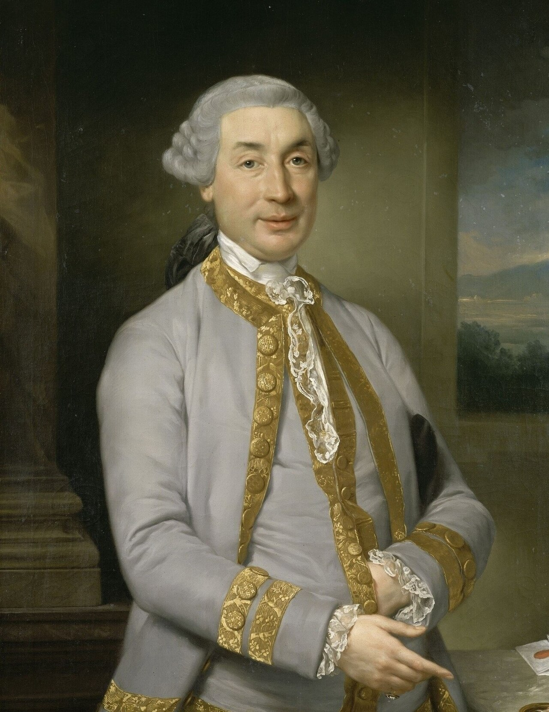
카를로 마리아 부오나파르테 · 나폴레옹의 아버지. 코르시카 소(小)귀족 출신의 법률가로, 한때 코르시카 독립 영웅 파스칼 파올리의 비서였다가 프랑스가 섬을 점령한 뒤 가장 먼저 프랑스 편에 붙었다. 그 변신이 아들 나폴레옹에게 프랑스 본토의 군사학교 입학 자격을 가져다주었다.
코르시카는 천 년간 제노바의 식민지였다. 그러나 1755년, 한 위대한 인물이 등장해 섬을 독립시켰다 — 파스칼 파올리(Pascal Paoli). 그는 유럽 계몽주의의 살아있는 본보기였다. 헌법을 제정하고, 코르시카 대학을 세우고, 여성에게도 투표권을 주었다(미국이 같은 권리를 보장하는 데 다시 150년이 걸린다). 장-자크 루소가 그를 사모해 코르시카를 위한 헌법 초안을 쓰겠다 자청했고, 영국의 제임스 보스웰이 그의 일대기를 영국에 출판했다. 그 자유의 섬이 1768년 5월 베르사유 조약으로 제노바에 의해 프랑스에 양도되었다. 1769년 5월 8일, 폰테노보 전투에서 파올리의 코르시카군은 패하고, 파올리는 영국으로 망명했다.
나폴레옹은 그 패전이 있고 정확히 100일 뒤에 태어났다. 사료가 전하기를, 어머니 레티치아는 임신 중에도 산을 넘어 게릴라 부대에 식량을 날랐다 한다. "나는 어머니의 자궁 안에서부터 화약 냄새를 맡고 자랐다"고 훗날 나폴레옹은 회상한다. 어머니 레티치아는 평생 그의 곁에서 가장 단호한 그림자였다. 황제가 된 아들이 어머니에게 황태후 칭호와 거대한 영지를 내리려 하자 그녀는 한사코 거부하며 — 자신의 매월 용돈을 따로 모았다. 누가 무엇을 잃을지 모르는 이 가문에서, 그녀만이 그 끝을 미리 짐작했다.
곁가지 하나 — 만약 1년만 늦었더라면
코르시카가 프랑스에 양도된 것은 1768년 5월. 나폴레옹이 태어난 것은 1769년 8월. 15개월의 차이가 그를 프랑스 시민으로 태어나게 했다. 만약 그가 1년만 더 일찍 태어났더라면, 그는 제노바인으로 태어났을 것이고 — 프랑스 군사학교의 무료 장학금을 받을 자격도, 프랑스 군대의 장교가 될 자격도 없었을 것이다. 어쩌면 그는 코르시카의 어느 변호사로 늙어, 파올리의 어두운 그림자 속에서 작은 자유의 꿈을 꾸며 살다 갔을 것이다. 한 사람이 어느 깃발 아래 태어나는가는 그 사람의 모든 야망의 색을 결정한다.
곁가지 둘 — 한 부부의 묘한 사정
나폴레옹의 어머니 레티치아는 결혼 당시 14세, 아버지 카를로는 18세였다. 두 사람은 8명의 자녀를 낳아 살렸다(이 시대치고는 놀라운 생존율이다). 형 조제프는 훗날 스페인 왕이 되고, 동생 루이는 네덜란드 왕, 제롬은 베스트팔렌 왕, 카롤린은 나폴리 왕비가 된다. 한 작은 섬의 한 가족 안에서 유럽의 절반이 왕좌를 나눠 차지하는 시대가 온다. "내 모든 형제들은 마치 자기들이 본디부터 왕의 아들인 양 행세했다"고 나폴레옹은 세인트헬레나에서 씁쓸하게 회상했다.
프랑스 본토
루이 15세의 치세 말년. 베르사유 궁정은 마담 뒤바리의 시대였고, 재정은 7년전쟁(1756–63)의 빚으로 짓눌리고 있었다. 5년 뒤 그가 죽고 루이 16세가 그 빚더미를 그대로 물려받는다. 그 짐이 결국 — 한 왕조와 한 시대의 운명을 결정한다.
미국 — 독립혁명 전야
같은 해 1769년, 보스턴에서는 영국군 주둔에 대한 반감이 끓고 있었다. 제임스 와트가 증기기관의 결정적 개량 특허를 받은 해이기도 하다. 7년 뒤 미국 독립선언, 20년 뒤 프랑스 혁명. 두 혁명을 잇는 다리 위에 갓 태어난 한 코르시카 아이가 누워 있었다.
영국
조지 3세의 치세. 로버트 클라이브가 인도 벵골을 이미 손에 넣었다. 그 인도의 부와 영국 함대의 우위가 다음 세대 영국이 나폴레옹을 가둘 모든 자원이 된다.
러시아
예카테리나 대제의 치세. 그녀가 첫 폴란드 분할(1772)을 준비하던 때. 그녀의 손자 알렉산드르 1세가 1777년에 태어난다 — 나폴레옹과 평생을 부딪칠 그 사내가.
청(淸)
건륭제(乾隆帝)의 치세 한복판. 청은 전성기였고, 같은 해 청군은 미얀마 원정에서 참패하고 있었다. 동서의 두 거인 유라시아의 한 끝과 다른 끝에서 동시에 마지막 빛을 내고 있었다.
일본
에도 막부의 제10대 쇼군 도쿠가와 이에하루의 치세. 곧 다누마 오키쓰구(田沼意次)의 상업 진흥 시대가 끝나고, 마쓰다이라 사다노부(松平定信)의 간세이 개혁(1787–)이 시작될 무렵이었다.
II
1779–1784년 · 브리엔 군사학교
브리엔의 외톨이 Napoleone에서 Napoléon으로
강의 듣기
아버지 카를로는 새 프랑스 총독에게 처세를 잘했다. 코르시카 귀족 증명서를 받아내, 1779년 — 9살의 나폴레오네는 자선 장학금으로 프랑스 본토 브리엔(Brienne-le-Château)의 왕립 군사학교에 입학한다. 그가 프랑스 땅을 처음 밟은 그 순간, 그는 프랑스어를 거의 한 마디도 못 하는 코르시카 소년이었다. 학교 친구들은 그의 이탈리아어 억양을 흉내내며 놀렸고, "라 파유 오 네(la paille au nez — 코에 짚을 단)"라는 별명으로 불렀다. Napoleone를 발음 못한 그들이 "la paille au nez"라 운율을 맞춘 것이다.
5년 6개월. 그는 한 번도 고향에 가지 못했다. 가족을 만나지 못했다. 그는 도서관에 박혀 살았다. 카이사르의 『갈리아 전기』, 플루타르코스 『영웅전』, 폴리비오스, 그리고 무엇보다 알렉산드로스 대왕의 전기. 그의 평생 영웅은 그 청년이 되었다. 그는 동급생들과의 모의 전투에서도 늘 가장 작은 부대를 가장 영리하게 썼고, 한 번은 눈싸움 전쟁에서 사령관이 되어 학교 운동장을 두 진영으로 갈라 일주일간 전쟁을 지휘했다.
1784년 그는 파리의 육군사관학교(École Militaire)로 진학했고 — 보통 4년 걸리는 과정을 1년 만에 끝마쳤다. 졸업 시험 성적은 58명 중 42등. 천재의 성적은 아니었으나 — 1년 만에 졸업한 사람의 성적이었다. 그는 16세에 포병 소위로 임관했다. 1년 뒤(1785) 아버지 카를로가 위암으로 죽었다 — 아들이 황제가 되는 모습을 보지 못한 채. 16살의 소위가 가장이 되었다.
곁가지 셋 어떤 의무도 그를 따라잡지 못한 두 가지 책과 빚
브리엔과 사관학교를 마친 뒤 발랑스(Valence)와 옥손(Auxonne)에서 포병 장교로 복무하던 시절 — 그는 거의 모든 봉급을 책 사는 데 썼다. 그가 옥손에서 빌린 책 목록이 남아있는데, 한 달에 평균 25권이었다. 카이사르·아피아노스·타키투스·계몽주의자들·루소·볼테르·아담 스미스·아랍 침공기·중국 황제 열전까지. 동시에 그는 빚더미였다. 어머니에게 송금하느라, 동생들의 교육비를 부담하느라, 그는 끊임없이 차용증서를 썼다. 한 무명의 코르시카 소위가 그렇게 한 시대의 모든 책을 통째로 읽어버린 것 — 그 5년이 훗날의 그를 만든다.
곁가지 넷 — 첫 작품, 그러나 마무리하지 못한 소설
젊은 나폴레옹은 작가가 되고 싶었다. 그는 「코르시카에 관한 편지(Lettres sur la Corse)」를 쓰고, 「가면 쓴 예언자(Le Masque prophète)」라는 단편을 쓰고, 「클리송과 외제니(Clisson et Eugénie)」라는 자전적 연애소설을 쓰다 미완성으로 남겼다. 만약 혁명이 일어나지 않았다면 그는 어쩌면 — 루소를 흉내내는 시골 군관 작가로 평생을 보냈을지 모른다. 혁명이 그에게서 작가를 꺼내고, 그 자리에 황제를 채워 넣었다.
미국
나폴레옹이 브리엔에서 프랑스어를 배우던 1781년, 요크타운에서 워싱턴과 라파예트가 영국군을 항복시켰다. 프랑스의 황금이 그 승리를 결정했다 — 그러나 그 황금이 곧 프랑스 왕실의 파산을 결정한다. 미국이 자유로워지는 그 비용을 한 세대 뒤 프랑스 왕이 자기 목으로 갚는다.
프랑스 — 폭풍 전야
1786년, 재무총감 칼론이 왕에게 보고한다 — "폐하, 더는 빚이 없습니다. 파산이 있습니다." 같은 해 나폴레옹은 옥손의 포병학교에서 후학을 가르치고 있었다. 세 해 뒤 그 파산이 바스티유의 함락이 된다.
III
1789–1792년 · 파리 / 코르시카
혁명의 바람, 그리고 파올리와의 결별
강의 듣기
1789년 7월 14일, 바스티유가 함락되었다. 20세의 나폴레옹 소위는 옥손의 막사에서 그 소식을 들었다. 그는 곧장 한 인민 폭동을 지지하는 글을 휘갈겼다 "왕의 권리에서 인민이 흘러나오는 것이 아니라, 인민의 권리에서 왕이 흘러나온다." 동료 장교들 대부분 귀족 출신 이 그를 노려보았다.
바스티유 함락, 1789년 7월 14일 · 작자 미상의 동시대 그림. 한 시대의 끝과 다른 시대의 시작. 나폴레옹이 옥손의 막사에서 그 소식을 받았을 때, 그는 20세였다.
그는 휴가를 받아 22개월에 걸친 긴 휴가를 코르시카로 돌아갔다. 12년 만의 귀향이었다. 그가 바라본 코르시카는 그러나 그가 떠난 그 코르시카가 아니었다. 영국에서 망명 생활을 하던 옛 영웅 파스칼 파올리가 혁명의 사면을 받아 돌아와 있었다. 64세의 노인 파올리는 다시 코르시카의 무관의 왕이 되었다. 20대의 나폴레옹은 그를 흠모하며 만나러 갔으나 — 두 사람 사이의 균열은 곧 드러난다.
파올리는 코르시카의 독립을 꿈꿨다. 나폴레옹은 코르시카가 프랑스의 한 부분이 되어 자신이 그 안에서 클 길을 꿈꿨다. 1793년, 프랑스 국민공회가 루이 16세를 처형하자 영국과 프랑스가 전쟁에 들어갔다. 파올리는 영국 편에 섰다. 나폴레옹의 형 조제프는 자코뱅 측에서 코르시카 의회 의원이 되었다. 파올리의 부하들이 부오나파르테 가문의 아작시오 저택을 습격해 약탈했다. 1793년 6월 11일 — 어머니 레티치아는 일곱 아이를 데리고 한밤중에 배에 올라 코르시카를 떠났다. 그들은 영원히 코르시카로 돌아가지 못한다. 그날 밤 — 나폴레옹은 Napoleone di Buonaparte를 죽이고 Napoléon Bonaparte가 되었다.
곁가지 다섯 — 한 아이가 어른이 되는 일은 늘 한 명의 영웅을 죽이는 일이다
파올리는 나폴레옹이 어릴 적부터 자신의 우상이었다. 그가 사관학교 시절에 쓴 첫 글은 파올리에 대한 송가였다. 1786년, 그는 망명 중인 파올리에게 직접 편지를 써 "위대한 분이시여, 저는 당신의 비서가 되고 싶습니다" 자청했다(파올리는 답하지 않았다). 그 영웅이 1793년에 나폴레옹을 "외국의 첩자"라 규정하고 가문을 추방했다. 한 청년이 한 영웅을 죽이고 — 그 자리에 자기 자신을 채워 넣는 일. 그것이 곧 그 청년의 평생 정치 신조가 된다. "더 큰 자아를 위해, 어제의 신념을 죽일 것."
프랑스 — 공포정치
나폴레옹이 코르시카에서 쫓겨난 1793년, 파리에서는 로베스피에르의 공포정치(Terreur)가 절정이었다. 1년간 1만 7천 명이 단두대에 올랐다. 자코뱅 측에 잘 보인 나폴레옹은 로베스피에르의 동생 오귀스탱의 보호를 받았다. 1794년 7월 27일(테르미도르 9일) 로베스피에르가 실각하자 — 그도 함께 체포되었다. 옥에서 12일을 보냈다. 단두대에 한 발을 디뎠다가 빠져나온 셈이다. 그 12일이 한 세대의 모든 것을 바꿀 사람을 살려두었다.
미국
같은 1793년, 조지 워싱턴이 두 번째 임기를 시작했다. 미국과 프랑스 사이에 "시민의 권리"라는 새 단어가 대서양을 오가고 있었다. 일라이 휘트니가 조면기를 발명한 해이기도 하다 — 그 발명이 미국 남부의 노예제를 50년 더 연장시켰고, 한 세기 뒤 남북전쟁의 씨앗이 된다.
영국
24세의 총리 소(小) 윌리엄 피트가 프랑스 혁명에 대한 대(對)불 동맹의 첫 자금줄을 풀고 있었다. 그가 이끄는 영국이 나폴레옹의 평생의 적이 된다.
IV
1793년 9월–12월 · 툴롱
툴롱 — 24세 포병 대위의 한 수
강의 듣기
코르시카에서 쫓겨난 24세의 포병 대위는 운명적인 임무에 배속되었다. 툴롱 — 프랑스 남부의 거대한 군항이 1793년 8월, 왕당파와 영국군에 의해 점령되어 있었다. 영국 함대(후드 제독), 스페인 함대, 사르데냐 군이 항구에 진을 쳤다. 프랑스 함대 17척이 그들 손에 들어갔다. 혁명 정부에게 툴롱의 회수는 곧 혁명의 사활이 걸린 문제였다.
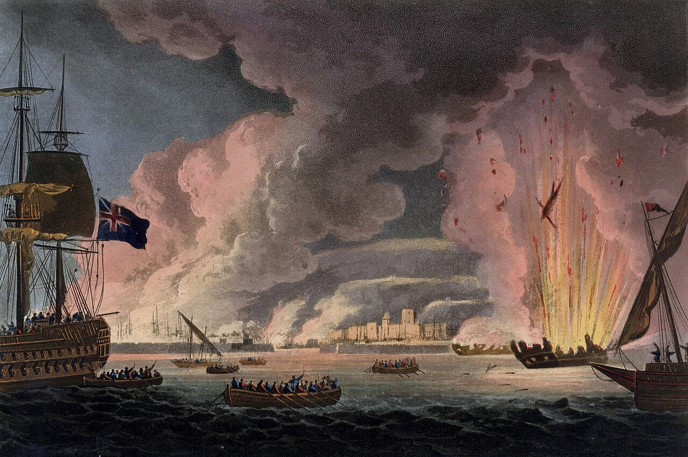
툴롱의 프랑스 함대 파괴, 1793년 12월 · 영국이 후퇴하며 프랑스 함대를 불태우는 장면. 나폴레옹의 포대가 항구를 내려다보는 작은 언덕 레귀에트(L Eguillette) 요새 을 점령한 그 순간, 영국 함대는 이미 항구를 떠나야 한다는 사실을 알았다.
나폴레옹은 포병 부사령관 카르토 장군 휘하에 배속되었다. 그가 사령관 화가 출신의 무능한 장군 에게 올린 작전이 모든 것이었다. "항구의 가장 깊은 입구를 내려다보는 작은 언덕 레귀에트를 점령하라. 그곳에 포대를 세우면, 영국 함대는 항구를 비울 수밖에 없다. 함대가 비면 도시는 저절로 떨어진다." 처음에는 묵살되었다. 두 번째 사령관 도페에게 다시 올렸다. 세 번째 사령관 뒤고미에가 마침내 그의 말을 들었다.
12월 17일 새벽, 폭풍우 속에서 공격이 시작되었다. 나폴레옹은 자기 포대 앞에 서서 직접 포탄의 궤적을 잡았다. 한 발의 총탄이 그의 허벅지를 스치고 갔다 — 평생 남은 그의 유일한 부상이다. 새벽이 되자 레귀에트는 함락되었다. 영국의 후드 제독은 그 순간 항구에서 철수해야 한다는 사실을 깨달았다. 그는 도주 전 항구에 남은 프랑스 함대 17척과 막대한 보급을 모두 불태웠다. 도시 시민 1만 5천 명이 영국 함대를 따라 도주했다. 남은 사람들에게는 자코뱅 위원회의 보복이 기다리고 있었다. 800명이 즉결 처형되었다.
승전 보고서가 파리에 도착했다. 사령관 뒤고미에가 직접 적었다: "이 어린 장교의 학식과 용기에 대해 적절한 보상이 주어지지 않는다면, 그가 스스로의 길을 찾아 떠나리라는 점을 우려합니다." 24세의 보나파르트는 24일 뒤 — 준장(brigadier general)으로 진급했다. 한 단계도 거치지 않고 두 단계를 뛰어넘었다. 한 어린 포병의 한 수가 그의 모든 다음 장(章)을 열었다.
곁가지 여섯 — 함께 진흙을 굴렀던 사람들
툴롱의 진흙 속에서 그는 한 사람의 평생 친구를 만났다 — 안도쉬 쥐노(Andoche Junot). 보병 중사였던 쥐노는 보나파르트가 진지에서 명령서를 쓰는데 포탄이 떨어져 종이 위로 진흙이 튀자 — 침착하게 말했다: "잘됐군요. 모래가 필요했는데." 보나파르트는 그를 곁에 두고 이듬해 부관으로 삼는다. 또한 그곳에서 오귀스탱 로베스피에르와 친해졌다. 위에서는 자코뱅 청년의 보호를 받고, 옆에서는 평생의 부관을 얻은 두 달 — 그것이 툴롱이었다.
같은 시간, 파리
툴롱이 함락된 그해 가을, 파리에서는 마리 앙투아네트가 처형되었다(10월 16일). 지롱드파 22명이 단두대에 올랐다. 12월에는 자크 에베르의 극좌파가 절정에 달해 — 이성의 제전(Fête de la Raison)이 노트르담 대성당에서 열렸다. 한 가수가 "이성의 여신"으로 분장해 제단 위에 앉았다. 11년 뒤, 같은 노트르담에서 나폴레옹이 황제관을 쓴다.
미국
워싱턴 대통령은 영불 전쟁에서 중립 선언(1793년 4월)을 발표했다. 미국은 두 옛 우방 사이에서 어느 편도 들지 않기로 했다. 그 결정이 다음 19세기 미국이 유럽에서 거리를 두는 외교 원칙의 시작이 된다(먼로 독트린).
V
1795년 10월 5일 (방데미에르 13일) · 파리
방데미에르 13일 — 한 그릇의 포도탄
강의 듣기
툴롱 이후 1년 반은 그러나 어려웠다. 1794년 7월 테르미도르 반동으로 로베스피에르 형제가 처형되자, 보나파르트는 자코뱅의 친구라는 이유로 체포되어 옥에 갇혔다. 12일 만에 풀려났다. 1795년 봄에는 그가 작전참모로 배치되었던 이탈리아 지중해군의 사령관직을 거절했다는 이유로 해임되었다. 그는 파리에서 무직(無職)의 일개 장교로, 옷이 너덜너덜한 채 거리를 떠돌았다. 한때 그는 인도나 이스탄불의 술탄을 위해 일하러 떠날까 진지하게 고민했다.
1795년 10월, 총재정부 수립을 앞두고 파리에서 왕당파의 봉기가 일어났다. 약 2만 5천 명의 무장 시민군이 의회를 향해 진격했다. 의회 측에 5천 명의 정규군이 있을 뿐이었다. 의회의 비상위원장 폴 바라스는 한때 툴롱에서 그를 본 적 있는 무직의 보나파르트를 다급히 호출했다.
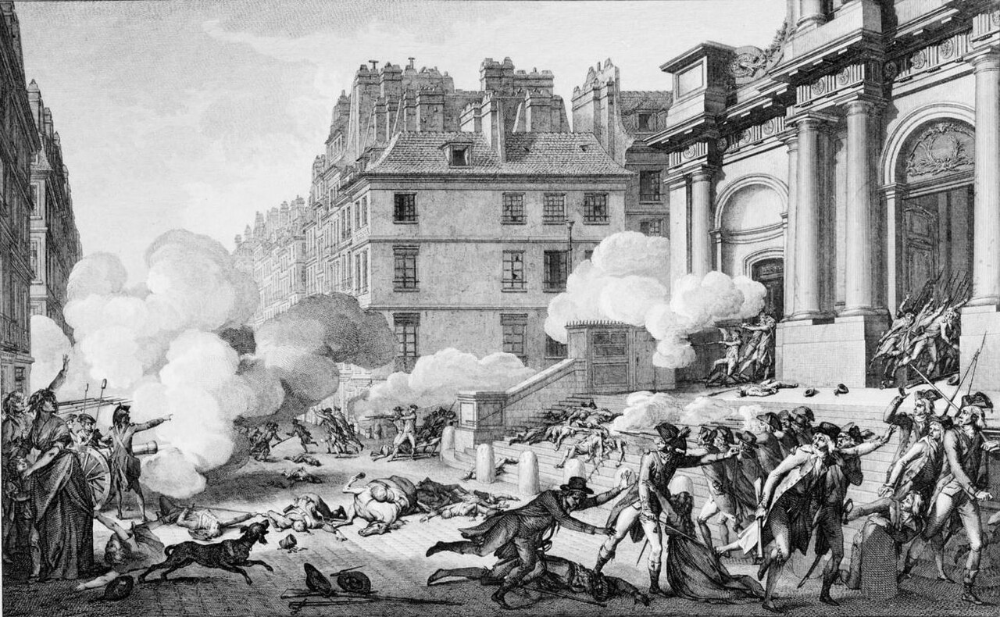
방데미에르 13일의 파리 · 샤를 모네 그림. 생-로크 성당 계단의 봉기군을 마주한 보나파르트의 대포 8문이 좁은 골목으로 포도탄을 쏟아부었다.
보나파르트는 30분 안에 결정했다. 파리 외곽의 사블롱(Sablons) 야포 보관소까지 — 후일 자신의 부관이 되는 25세의 기병 장교 조아킴 뮈라(Joachim Murat)를 보내, 8문의 야포를 의회 앞으로 끌어왔다. 봉기군이 의회 건물 정면 생-로크(Saint-Roch) 성당 계단 으로 몰려오자, 보나파르트는 좁은 거리에 대고 직접 포격 명령을 내렸다. 포도탄(grapeshot, mitraille) 작은 쇠공 수십 개가 한 포탄에 묶인 이 골목으로 쏟아졌다. 200여 명이 즉사했다. 봉기는 두 시간 만에 끝났다.
훗날 영국의 토머스 칼라일이 이 장면을 "a whiff of grapeshot(한 차례의 포도탄 바람)"이라 표현했다. 그 짧은 표현이 영어권에서 그 사건의 별명이 되었다. 보나파르트는 그 자리에서 이탈리아 방면군 사령관으로 임명되었다 — 정확히는 그 임명이 약속되었고, 그가 약혼한 4개월 뒤에 정식 임명되었다. 26세의 한 외톨이 장교가, 단 두 시간의 일로, 프랑스 군부의 최상층에 올라섰다.
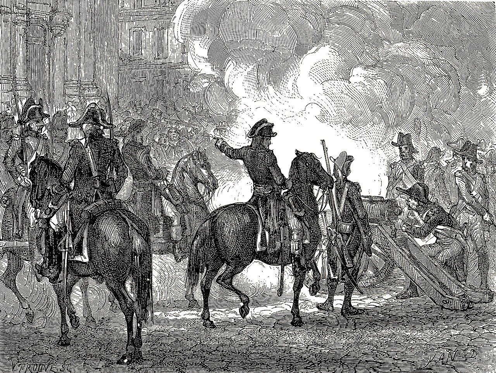
생-로크 계단의 보나파르트 · 그가 8문의 대포로 한 봉기를 끝낸 자리. 오늘날 파리 1구의 그 성당 계단에는 포탄 자국이 19세기 후반까지 그대로 남아 있었다.
곁가지 일곱 — 뮈라, 그리고 그가 30분 만에 가져온 8문의 대포
방데미에르의 진짜 영웅은 어떤 면에서 보나파르트가 아니라 25세의 기병 중대장 조아킴 뮈라였다. 사블롱 보관소를 봉기군도 노리고 있었다. 누가 먼저 가느냐의 문제였다. 뮈라는 200명의 기병을 이끌고 봉기군보다 30분 먼저 도착했다. 그는 평생 보나파르트의 가장 화려한 부관이 된다. 결혼해 보나파르트의 막내 누이 카롤린의 남편이 되고, 나폴리 왕이 되고, 그리고 — 황제가 몰락한 뒤 1815년 처형된다. 마지막 사형장에서 그는 자기 가슴을 가리키며 명령했다: "여기를 쏘아라, 얼굴은 살려라." 그가 평생 자신의 매력으로 살아온 그 얼굴이었다.
곁가지 일곱-A — 키 167.6cm의 신화, 그리고 영국 인치의 장난
그가 평생 시달린 가장 유명한 모욕은 "키 작은 코르시카인(le petit Corse)"이라는 별명이었다. 그러나 — 그것은 영국식 단위와 프랑스식 단위를 혼동한 한 세기의 오해다. 1821년 그의 사후 부검 보고서가 적은 그의 키는 "5피에 2푸스(5 pieds 2 pouces)". 영국이 그 숫자를 그대로 자국 단위로 옮겨 "5 ft 2 in"(약 157cm)이라 비웃었다. 그러나 프랑스의 옛 단위 1푸스(pouce)는 2.71cm — 영국 인치(2.54cm)보다 약 6% 길다. 정확히 환산하면 약 168.5cm. 18세기 후반 프랑스 남성의 평균 키(약 164cm)를 살짝 웃돈다. 영국이 만든 풍자만화 길레이(James Gillray)와 크룩섕크(George Cruikshank)의 가 그를 키 작은 폭군으로 그렸고, 그 그림이 한 세기 반의 통념이 되었다. 그가 부하들에게서 받은 별명 "꼬마 부사관(le petit caporal)"도 키가 아니라 한 사령관이 한 보병의 자리까지 내려와 서로의 어깨를 부딪힌다는, 그 친근함의 비유였다. 호위대인 황실근위대(키 178cm 이상의 선발)와 그가 함께 서면 — 그가 작아 보였다는 한 시각적 착시도 컸다.
출전: Britannica "Was Napoleon Short?" · HowStuffWorks · napoleon-series.org
새 정부 — 총재정부
방데미에르 진압의 직접적 결과로 총재정부(Directoire)가 출범했다. 5명의 총재가 행정을 맡는 어색한 합의 정부였다. 5년 4개월 뒤 — 그 정부도 한 사내의 쿠데타로 끝난다. 그 사내가 바로 방데미에르의 영웅이었다.
VI
1796년 3월 9일 · 파리
조세핀, 그리고 이탈리아로 떠나는 이틀 뒤
강의 듣기
한 여인이 있었다. 그녀는 그보다 여섯 살 많았고, 두 자식이 있었고, 처음에는 그를 사랑하지 않았다. 그는 평생 그녀만을 사랑했다.
방데미에르 직후, 파리의 살롱들은 보나파르트를 새로 발견된 보석처럼 떠받들었다. 그가 처음 만난 것은 조세핀 드 보아르네(Joséphine de Beauharnais). 본명은 마리-조제프-로즈 타셰 드 라 파주리. 카리브해의 마르티니크 섬 사탕수수 농장주의 딸이었다. 16세에 정략결혼으로 알렉상드르 드 보아르네 자작과 결혼해 두 아이 외젠(Eugène)과 오르탕스(Hortense) 를 낳았다. 남편은 공포정치 기간에 단두대에서 처형되었고, 그녀 자신도 단두대 직전까지 갔다가 로베스피에르 실각으로 살아남았다. 살아 돌아온 그녀는 파리 사교계에서 폴 바라스의 정부(情婦)가 되어 살고 있었다.
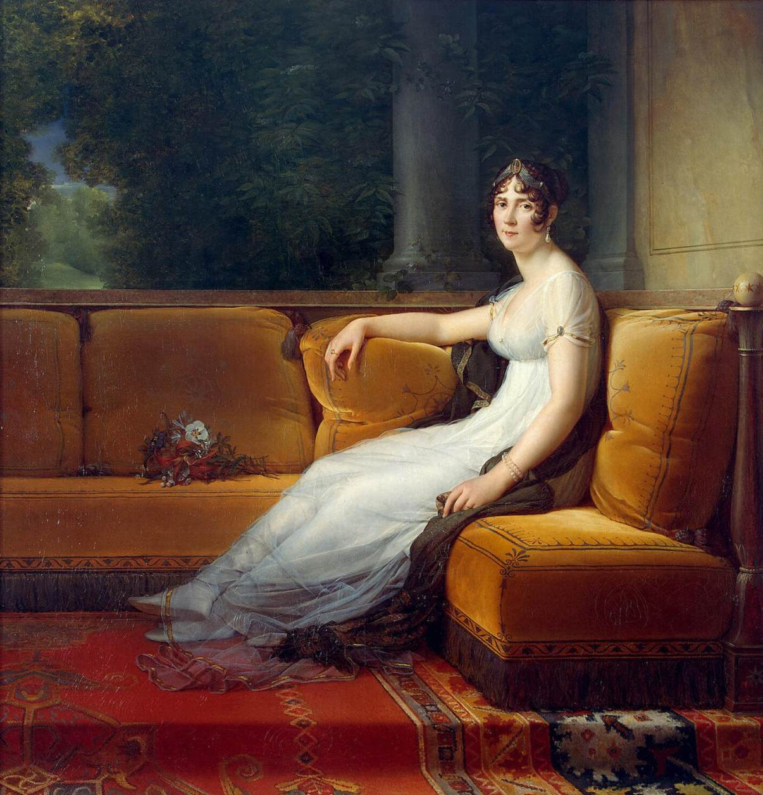
조세핀 드 보아르네 · 프랑수아 제라르 그림. 그녀를 만난 뒤 보나파르트는 평생 그녀의 이름을 부르는 방식을 바꾸지 못했다 — "내 사랑하는 조세핀(ma chère Joséphine)." 사실 그가 처음 그녀를 그렇게 부르기 전까지, 그녀의 이름은 "로즈"였다. 보나파르트가 그녀를 "조세핀"이라 부르기 시작한 것이다.
그녀는 32살, 보나파르트는 26살이었다. 그녀는 한 살의 차이가 너무 적어 자신의 나이를 4년 줄여 호적에 기재했다(공식 결혼 서류에 그렇게 적혀 있다). 보나파르트는 그녀에게 첫눈에 빠졌다. 그녀는 처음에는 이 코르시카 청년의 야성과 가난한 보병 같은 옷차림을 견디기 어려워했다. 그러나 바라스가 그녀에게 권했다: "이 청년의 별이 솟고 있소. 그에게 잘 보여 두시오." 그녀는 동의했다.
1796년 3월 9일, 두 사람은 파리 시청에서 결혼했다. 보나파르트는 그 결혼 등록부에 자신의 나이를 28세로(2년 늘려) 적었고, 조세핀은 28세로(4년 줄여) 적었다 — 두 사람을 동갑으로 만들기 위한 작은 거짓말이었다. 결혼식 이틀 뒤, 그는 이탈리아 방면군 사령부로 출발했다. 신혼의 침상을 두 밤만 함께 쓰고 떠난 그는, 그 후 14개월간 그녀에게 약 200통의 편지를 보낸다. 그 편지들은 사료로 남아 있다 한 사내가 한 여인에게 얼마나 깊이 사로잡힐 수 있는지를 보여주는, 동시에 그가 그녀를 얼마나 적게 알았는지를 보여주는 그 모순의 기록이다.
조세핀 — 그대의 모습 하나가 내 영혼을 다 태우고도 남았소. 잠은 내게서 도망쳤고, 끼니는 내게 쓸모가 없고, 일은 견딜 수 없소. 그대 없이는 어디도 가지 않겠다고, 1만 번이라도 말하고 싶소.
1796년 4월, 이탈리아 원정 중 조세핀에게 보낸 편지
곁가지 여덟 — 조세핀이 그를 사랑하지 않았다는 사실, 그리고 그 사실의 비극
조세핀은 결혼 후 처음 몇 년간 보나파르트를 진심으로 사랑하지 않았다. 그가 이탈리아에 있는 동안 — 그녀는 파리에서 한 잘생긴 경기병 장교 이폴리트 샤를(Hippolyte Charles)과 공개적으로 연애했다. 보나파르트는 이집트 원정 중에 그 사실을 알게 되었고(부하 쥐노가 알려주었다), 그 분노가 한때는 자살 직전까지 그를 몰고 갔다고 한다. 그러나 결국 그가 그녀를 용서했고, 그 뒤로는 역설적으로 그녀가 그를 깊이 사랑하기 시작했다. 그가 그녀를 이혼시키던 1809년에는, 그녀가 통곡하며 그의 발 아래에 엎드렸다. 사람의 마음은 사랑이 다른 한쪽으로 흐르는 순간에야 비로소 그 방향으로 돌아온다.
곁가지 아홉 — 두 의붓자식, 그리고 그들이 받은 운명
조세핀의 두 자식을 보나파르트는 자기 자식처럼 길렀다. 의붓아들 외젠 드 보아르네는 이탈리아 부왕(副王)이 되어 평생 의붓아버지에게 충성했고 — 보나파르트가 가장 신뢰한 부하 중 하나가 된다. 의붓딸 오르탕스는 보나파르트의 동생 루이와 결혼했고, 그녀의 셋째 아들이 바로 나폴레옹 3세다. 한 세대 뒤 프랑스 제2제정의 황제가 되는 그 아이가, 조세핀의 손자였다. 보나파르트의 직계는 끊어졌지만, 그가 사랑한 여인의 핏줄은 50년 뒤 다시 프랑스 황궁으로 돌아간다.
VII
1796년 4월 – 1797년 10월 · 북이탈리아
이탈리아 원정 — 로디·아르콜레·리볼리
강의 듣기
그가 도착한 이탈리아 방면군은 비참했다. 4만의 병사가 알프스 산자락의 진흙에 갇혀 있었고, 신발이 없어 맨발이었고, 봉급은 1년치가 밀려 있었다. 사령부에 도착한 26세의 새 사령관을 보고 자기보다 머리 하나가 더 작고, 옷이 너덜너덜한 그를 보고 노장 오주로(Augereau)는 동료 마세나(Masséna)에게 속삭였다 한다: "이 작은 자식이 우리를 무섭게 만드는군." 사흘 뒤 그는 두려움 없이 그를 따랐다.
보나파르트는 부대 앞에서 그 유명한 연설을 했다. "병사들이여, 그대들은 헐벗고 굶주려 있다. 정부는 그대들에게 많은 빚을 지고 있지만 그대들에게 아무것도 주지 못한다. ... 나는 그대들을 세상에서 가장 비옥한 평야로 데려가려 한다. 풍요로운 도시들, 거대한 지방들이 그대들 손에 들어올 것이다. 그곳에서 그대들은 명예와 영광과 부를 얻게 될 것이다. 이탈리아군의 병사들이여 — 용기와 인내가 그대들에게 있는가?"
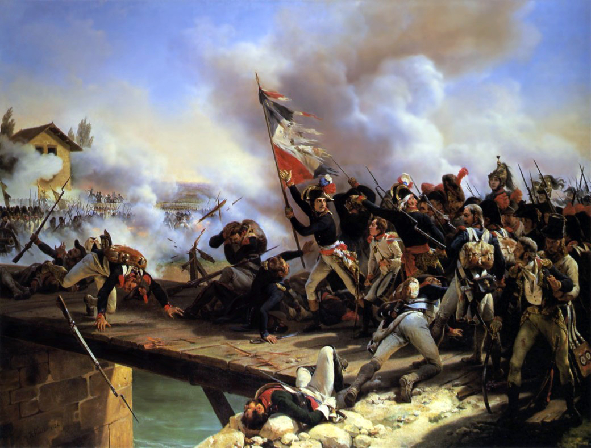
아르콜레 다리의 전투, 1796년 11월 · 진흙 늪 위에 놓인 좁은 다리를 두고 오스트리아군과 사흘을 싸웠다. 다리 한복판에서 깃발을 들고 부하들을 부르던 보나파르트는 결국 진흙 속으로 굴러떨어졌다가 부하들에게 구출되었다.
이후 14개월의 이탈리아 원정은 군사사(軍事史)의 한 챕터를 이룬다. 그가 거둔 주요 승리:
몬테노테(Montenotte, 1796.4.12) — 첫 승리. 로디 다리(Lodi, 5.10) — 좁은 다리를 두고 오스트리아군과 정면 격돌. 그가 이 전투 직후 자신의 부하들로부터 처음 "꼬마 부사관(le petit caporal)"이라는 애칭을 얻었다. 평생 그가 가장 좋아한 이름이다. 카스틸리오네(Castiglione, 8.5), 아르콜레(Arcole, 11.15–17) — 늪지대 위 좁은 다리를 사흘을 두고 싸웠다. 리볼리(Rivoli, 1797.1.14) 4개 방향에서 오는 오스트리아 4만 5천을 그의 4만 명이 분리·격파했다. 군사사가 한스 델브뤼크는 이 전투를 알렉산드로스 이후의 가장 완벽한 전술 승리로 꼽았다.
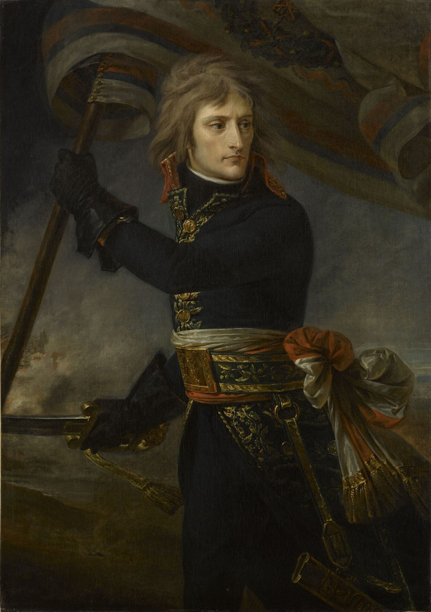
앙투안-장 그로, 「아르콜레 다리 위의 보나파르트」(1801, 베르사유). 화가 그로(Gros)는 보나파르트의 신화를 만든 두 화가 중 하나가 된다. 다른 한 명은 자크-루이 다비드.
1797년 10월, 보나파르트는 파리의 정부와 상의도 없이 오스트리아와 직접 협상해 캄포포르미오(Campo Formio) 조약을 맺었다. 오스트리아령 네덜란드(벨기에)가 프랑스에 양도되고, 베네치아 공화국 천 년의 공화국 이 오스트리아에 양도되어 멸망했다. 보나파르트는 단 18개월 만에 자기 군대를 무에서 만들어, 합스부르크 제국의 한 팔을 부러뜨리고, 자기 이름을 유럽의 모든 외교 문서에 새겨 넣었다.
곁가지 열 — 모스크 옆 깃발 일화
이탈리아 원정 중, 보나파르트는 한 도시에서 약탈 직전이던 부대를 직접 멈춰 세웠다. 도시의 모스크(이슬람사원) 옆에서 자신의 깃발을 꽂으며 그는 말했다: "여기서부터는 신성한 땅이다. 우리가 새 통치자가 된다면, 우리의 권위는 보호에서 나오지 약탈에서 나오지 않는다." 그것이 그의 통치 원칙의 첫 진술이었다. 동시에 그것은 그가 늘 동방에 매혹되어 있었음을 보여주는 한 장면이기도 했다. 2년 뒤 그는 이집트로 떠난다.
곁가지 열하나 — 베네치아의 청동 말, 그리고 베네치아의 마지막
천 년의 베네치아 공화국이 캄포포르미오 조약으로 멸망했다. 보나파르트는 베네치아의 산 마르코 광장의 청동 말 네 마리 4세기 콘스탄티노폴리스에서 가져온 를 떼어 파리로 보냈다. 오늘날의 카루셀 개선문(Arc de Triomphe du Carrousel) 위에 그 말들의 복제품이 서 있다. 원본은 1815년 빈 회의 후 베네치아로 돌아갔다. 한 황제가 약탈한 것을, 다른 회의가 돌려주었다.
오스트리아 — 합스부르크의 새 황제
같은 1797년, 합스부르크 황제 프란츠 2세는 이 청년 장군에게 두 번 패한 뒤 깊은 충격을 받았다. 9년 뒤 그는 나폴레옹의 황제 즉위에 대응해 신성로마제국을 해체(1806)하고 자기 자신을 "오스트리아 황제 프란츠 1세"로 재선언한다. 천 년의 신성로마제국이 한 코르시카 청년 때문에 종이 위에서 사라졌다.
영국 — 새로운 적
같은 해 영국 해군이 캄페르다운에서 네덜란드 함대를 격파했다. 호레이쇼 넬슨 제독이 그 함대의 부사령관으로 부상하고 있었다. 보나파르트가 평생 가장 두려워하게 될 두 영국인 넬슨과 웰링턴 중 첫 사람이 등장했다.
VIII
1798년 5월 – 1799년 8월 · 이집트·시리아
이집트 원정 — 피라미드, 아부키르, 로제타석
강의 듣기
이탈리아의 영웅이 파리에 돌아온 뒤 — 그는 한가했다. 총재정부는 그가 두려웠고, 그도 정부가 지루했다. 그가 바라본 다음 적은 영국이었고, 영국의 가장 큰 동맥은 인도였다. 인도로 가는 길은 이집트를 통한다.
1798년 5월, 보나파르트는 13척의 전함과 400척의 수송선, 3만 8천의 병사와 더 중요하게는 167명의 과학자·기술자·고고학자·예술가를 데리고 툴롱을 떠났다. 화학자 베르톨레, 수학자 몽주, 지리학자 자케 등 당시 프랑스 학사원의 최고들이었다. 이 원정은 군사 원정인 동시에 인류 최초의 학술 원정이었다. 19권으로 된 「이집트지(Description de l Égypte)」가 그 결실이다. 영국 함대(넬슨)는 지중해 어딘가에서 그들을 찾고 있었다. 그들은 7월 1일 알렉산드리아에 무사히 상륙했다.
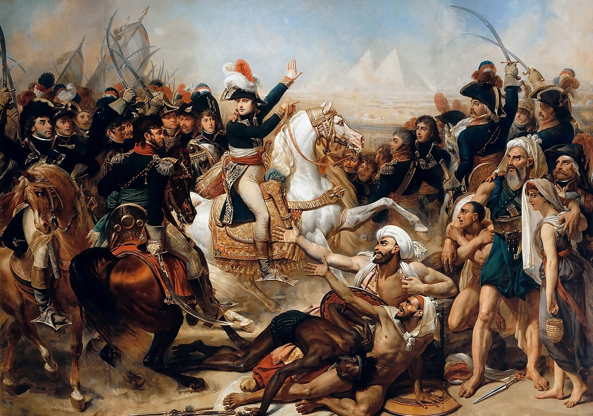
앙투안-장 그로, 「피라미드 전투」. 1798년 7월 21일, 카이로 외곽. 1만 명의 맘루크 정예 기병이 4세기간 이집트를 지배해온 그 전사들이 프랑스 보병의 사각방진(carré) 앞에 무너졌다. 보나파르트가 부하들에게 외친 말이 전한다: "병사들이여, 저 피라미드들 위에서 사천 년의 역사가 그대들을 내려다보고 있다(Soldats, songez que du haut de ces pyramides quarante siècles vous contemplent)."
승전 9일 뒤, 1798년 8월 1일. 알렉산드리아 동쪽 아부키르 만(Aboukir Bay)에서 보나파르트가 잠시 자리를 비운 프랑스 함대를 영국의 넬슨이 따라잡았다. 닐 해전(Battle of the Nile). 13척의 프랑스 전함 중 11척이 격침되거나 나포되었다. 기함 로리앙(L Orient)호가 폭발하며 — 그 폭발음이 30km 떨어진 알렉산드리아에서 들렸다 한다. 보나파르트의 이집트 군대는 그 순간 본국에서 단절되었다. 그는 그 사실을 며칠 뒤에야 알았다.
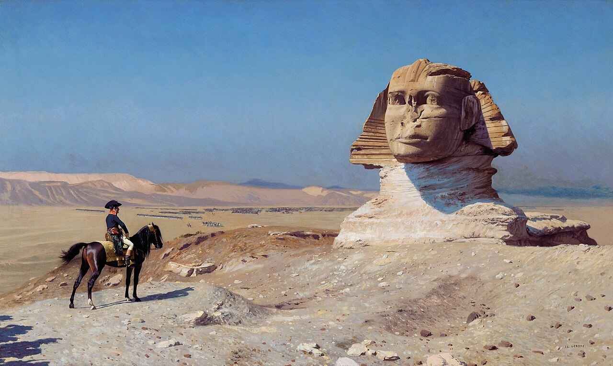
장-레옹 제롬, 「스핑크스 앞의 보나파르트」(1867). 19세기 후반에 그려진 상상화. 사천 년의 침묵과 한 시간의 야망이 마주섰다.
이집트에 갇힌 그는 동방의 군주처럼 행세하기 시작했다. 카이로에서 그는 「술탄 알-카비르(Sultan al-Kabir, 위대한 술탄)」라 자칭하고, 자기가 이슬람으로 개종할 의향이 있다고 비공식으로 흘렸다. 셰이크들에게 "나는 알라가 보낸 자, 무함마드의 친구" 라 적기까지 했다. 코란을 인용하며 통치했다. 그러나 이 모두는 그 자신의 군대조차 서로의 얼굴에 침을 뱉으며 비웃은 가장(假裝)이었다.
1799년 봄, 그는 동쪽 시리아로 진군해 — 아크레(Acre) 포위를 두 달간 시도했다. 영국 함대(시드니 스미스)와 오스만 군이 합세해 도시를 지켰다. 그가 평생 처음으로 포기한 포위였다. 다시 카이로로 회군하던 길에 흑사병이 부대를 덮쳤다. 그는 야파(Jaffa)의 흑사병 병동에서 환자들의 종기를 손으로 만지며 격려했다 — 그로의 그림이 그 장면을 신화로 만들었다. 그러나 같은 야파에서 그는 항복한 오스만 포로 3,000명을 식량과 보급 부족을 이유로 학살했다. 같은 그의 손이 한 손은 어루만지고, 다른 한 손은 베었다.
곁가지 열둘 — 로제타석, 또는 한 군인이 우연히 켠 인류의 등불
1799년 7월, 나일강 어귀의 라시드(로제타) 요새를 보수하던 프랑스 공병 피에르-프랑수아 부샤르 대위가 한 검은 화강암 돌비석을 발견했다. 같은 내용이 세 가지 문자(이집트 신성문자, 이집트 민중문자, 그리스어)로 새겨져 있었다. 이 돌이 그로부터 23년 뒤 장-프랑수아 샹폴리옹의 손에서 이집트 상형문자를 해독한 열쇠가 된다. 1801년 프랑스가 이집트에서 패퇴할 때 영국이 이 돌을 빼앗아갔다. 오늘날 대영박물관 가장 인기있는 전시품이다. 한 황제의 군사적 실패가 한 문명의 5천 년 기억을 인류에게 돌려주었다.
곁가지 열셋 — 한 편지가 한 결혼을 거의 끝낼 뻔한 일
이집트에서 보나파르트의 부하 쥐노가 진심으로 사령관에게 알렸다: "폐하의 부인이 파리에서 이폴리트 샤를이라는 경기병과 공개적으로 살고 있습니다." 그날 밤 보나파르트의 막사에서 텐트의 천이 찢어질 정도로 그가 울부짖었다고 부관 부리엔이 「회상록」에 적었다. 그는 즉시 형 조제프에게 편지를 보냈다 — "이혼을 준비해주시오." 그러나 그 편지는 영국 함대에 나포되어, 영국 신문에 그대로 실렸다. 유럽 전체가 그의 배신당한 가정을 비웃었다. 그가 본국으로 돌아간 1799년 가을, 조세핀이 미리 그를 마중하러 가지 못했다. 그는 파리의 집(샹트레인 거리(rue de la Victoire))에 도착해 — 침실 문을 잠그고 그녀의 출입을 막았다. 사흘간 그렇게 있었다. 그녀가 두 자식 외젠과 오르탕스와 함께 문 앞에서 울자, 마침내 문이 열렸다. 두 사람은 그날 밤 서로를 다시 사랑하기 시작했다 한다.
영국 — 넬슨이라는 사내
아부키르 만에서 프랑스 함대를 격침시킨 호레이쇼 넬슨 제독은 한쪽 눈과 한쪽 팔이 없는 40세의 야윈 사내였다. 그가 그 한 해전(海戰)으로 영국의 영웅이 되었고, 7년 뒤 트라팔가르(1805)에서 보나파르트가 영국 본토 침공을 영원히 포기하게 만든다. 자기 자신은 그 트라팔가르에서 죽는다 — 그가 격침시킨 한 발의 머스킷탄이 그의 등을 관통해. "신이여, 감사합니다. 나는 의무를 다했습니다(Thank God I have done my duty)"가 그의 마지막 말이었다.
인도 영국의 다음 한 수
같은 시기 인도 마이소르 왕국에서 보나파르트와 동맹을 모색했던 티푸 술탄이 영국군과 싸우고 있었다. 1799년 5월 4일, 세링가파탐 함락에서 티푸가 전사했다. 보나파르트의 동방 동맹의 마지막 가능성이 그 날 함께 죽었다. 한 인도의 호랑이를 죽인 그 영국군 사령관은 아서 웰즐리의 형 — 그러나 곧 그 동생이, 16년 뒤 워털루에서 보나파르트를 마주한다.
IX
1799년 11월 9–10일 (브뤼메르 18–19일) · 파리
브뤼메르 18일 — 제1통령
강의 듣기
이집트 군대를 진흙 속에 버려둔 채, 보나파르트는 1799년 8월 23일 두 척의 작은 호위함을 타고 알렉산드리아를 떠났다. 47일간 영국 함대를 피해 항해해, 10월 9일 프레쥐스에 상륙했다. 그가 도착한 프랑스는 카르토 장군 시대의 그 무능한 프랑스가 아니었다. 인플레이션과 부패와 정쟁이 정부를 마비시켰고, 시민들은 누구든 누구든 강한 손이 정부를 잡아주기를 원했다.
형 뤼시앙 보나파르트가 마침 그때 500인 의회 의장이었다. 외교관 탈레랑이 음모의 사슬을 잇고, 경찰 총감 푸셰가 그것을 묵인하고, 총재 시에예스가 의회를 자기 손에 넣고 싶어한 그가 군사적 지원자를 찾고 있었다. 그가 보나파르트를 도구로 삼으려 했다. 보나파르트는 그를 도구로 삼으려 했다. 두 사람은 잠시 동맹이 되었다.
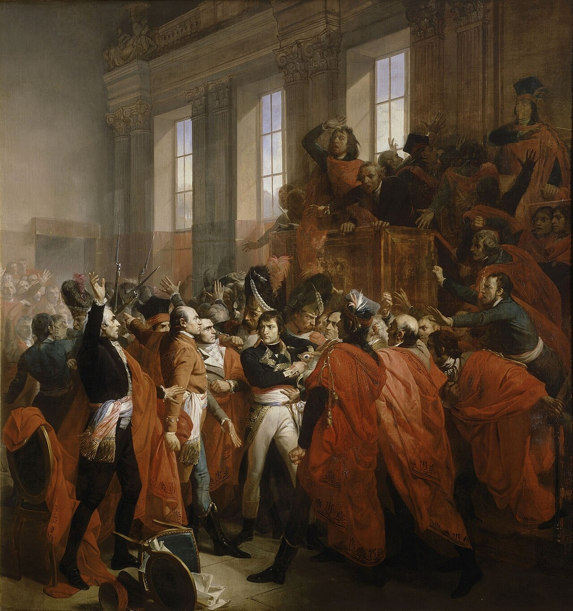
프랑수아 부쇼, 「500인 의회의 보나파르트」(1840). 의원들이 그를 향해 단검을 들이대며 "법의 보호 밖에 두라!" 외치고 있다. 그는 한순간 휘청였다.
브뤼메르 18일(1799년 11월 9일) — 500인 의회와 원로원이 파리 외곽의 생-클루(Saint-Cloud)로 옮겨졌다. 명목은 "음모로부터 안전을 위해". 다음 날 보나파르트는 자기 척탄병들을 거느리고 의회에 들어섰다. 의원들이 격분해 그를 둘러쌌다 — "무법자, 법의 보호 밖에 두라(hors-la-loi)!" 단검이 그의 옷자락을 스쳤다. 보나파르트는 평생 처음으로 정치 무대에서 휘청였다. 핏자국이 그의 얼굴에 묻었다(자기 손톱이 얼굴을 긁은 자국이라는 해석도 있다). 그가 의회에서 끌려나오는 순간이었다.
형 뤼시앙이 모든 것을 구했다. 의회 의장으로서 그는 휘청이는 의회를 향해 검을 빼들고 외쳤다: "이 흉기들 — 이것은 내 동생을 향한 것이 아니라, 자유 그 자체를 향한 것이오! 내가 만약 내 동생이 자유를 배신하리라 믿으면 — 이 손으로 내가 그의 가슴을 찌르겠소!" 검을 자기 동생의 가슴에 가져다 댔다. 그러는 사이 척탄병들이 "의장의 동생이 위협받고 있다"는 신호로 의회 회의실로 진입해 의원들을 모두 쫓아냈다. 의원 일부는 창문으로 뛰어내려 도주했다.
그 밤, 새 헌법이 잠시 만들어졌다. 3명의 통령(Consul) 체제 — 형식적으로는 세 명이었지만 실제로는 제1통령(Premier Consul)이 모든 권한을 가졌다. 보나파르트가 그 자리에 앉았다. "혁명은 끝났다. 혁명이 시작될 때의 그 원칙들로 돌아가는 일만이 남았다"고 그는 선언했다. 시에예스는 자기 도구가 자기를 도구로 삼은 것을 깨닫고 어깨를 늘어뜨리고 정치에서 물러섰다. 두 시간의 의회 난동으로 30세의 한 코르시카 청년이 한 나라의 최고 권력자가 되었다.
곁가지 열넷 — 푸셰와 탈레랑, 두 변신의 천재
브뤼메르 쿠데타의 두 진짜 설계자는 탈레랑(외교)과 푸셰(경찰)였다. 탈레랑은 가톨릭 주교 → 혁명파 → 나폴레옹의 외교 장관 → 부르봉 복고의 외교 장관 → 1830년 7월 왕정의 외교 장관까지 다섯 정권을 연속으로 섬긴다. 푸셰는 자코뱅의 처형자 → 나폴레옹의 경찰총감 → 부르봉 복고 정부의 경찰 장관까지 살아남는다. 보나파르트는 두 사람을 평생 의심했지만 평생 쓸 수밖에 없었다. "한 명은 거짓말로 살고, 다른 한 명은 배신으로 산다"고 그는 평했다. 정확한 평이었다 — 그러나 그 자신도 그들이 없으면 한순간도 다스리지 못했다.
미국
같은 1799년 12월, 조지 워싱턴이 마운트 버넌에서 죽었다. 한 공화국의 첫 대통령이 무관(無冠)의 농부로 죽었다. 같은 달 대서양 너머에서는 한 청년이 군중 앞에서 황제로 가는 첫 계단을 올랐다. 두 신생국의 두 다른 길.
독일
같은 무렵 예나 대학에서 청년 헤겔이 「피히테와 셸링의 차이」를 쓰고 있었다. 6년 뒤 그가 예나 거리에서 백마를 탄 나폴레옹을 보고 — "세계정신이 말을 타고 지나간다(Weltgeist zu Pferde)"라 적는다.
X
1800년 6월 14일 · 마렝고 / 1802년 3월 아미앵
알프스를 넘어 마렝고로 평화의 짧은 휴식
강의 듣기
제1통령이 된 그에게 외부의 적이 다시 다가왔다. 오스트리아·러시아·영국·오스만의 제2차 대불 동맹이 결성되어 있었다. 가장 큰 위협은 이탈리아를 다시 빼앗긴 합스부르크 군이 멜라스 장군 휘하에 6만으로 다시 진격해온 것이었다. 보나파르트는 5만의 새 부대를 비밀리에 스위스 알프스를 통해 후방에서 이탈리아로 보내기로 했다.
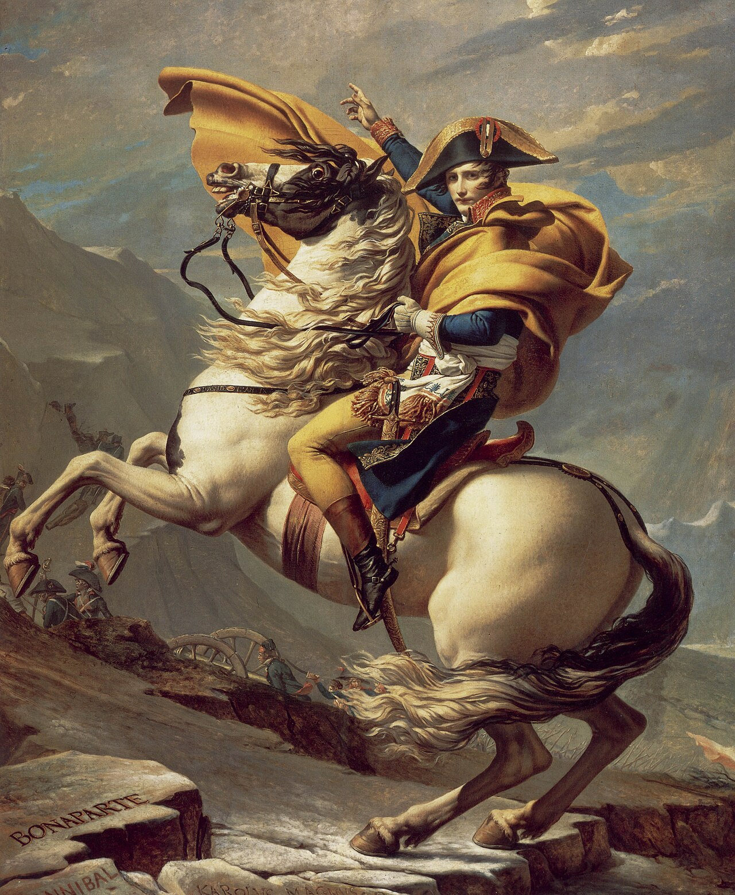
자크-루이 다비드, 「생-베르나르 고개를 넘는 보나파르트」(1801, 말메종). 다비드가 그의 명령으로 그린 신화. 그러나 실제로는 보나파르트는 흰 백마가 아니라 한 마리의 노새를 타고 알프스를 넘었다. 더 안정적이라는 이유로. 신화는 사실보다 항상 더 잘 다듬어진다.
1800년 5월, 4만 6천의 부대가 7월의 알프스 그것도 아직 눈이 녹지 않은 생-베르나르 고개를 넘었다. 대포는 분해되어 나무 썰매에 실려 4명이 한 조로 끌어올렸다. 오스트리아군 멜라스는 프랑스군이 등 뒤에 나타났을 때 자기 눈을 의심했다. 그러나 이번에는 모든 일이 보나파르트가 원한 대로 가지 않았다.
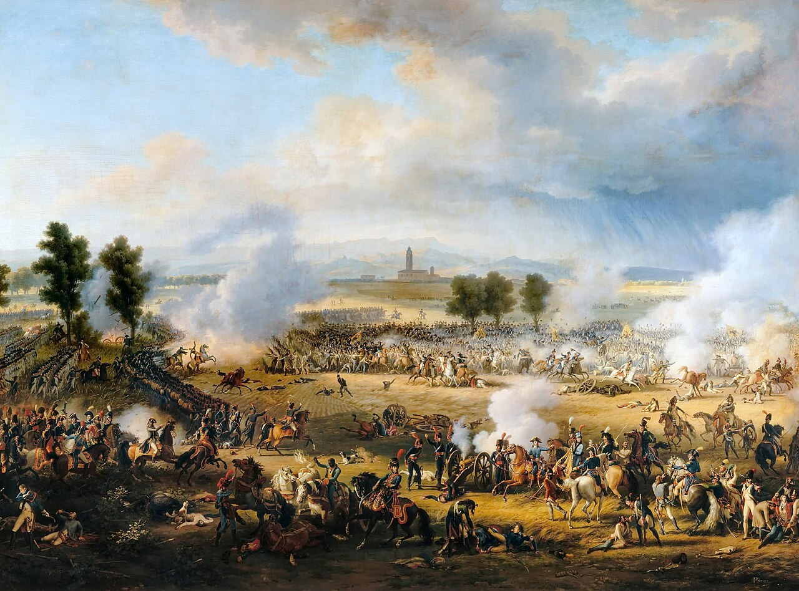
루이-프랑수아 르죈, 「마렝고 전투」(1802). 6월 14일 정오까지 프랑스군은 패배 직전이었다. 그 직후 합류한 드제(Desaix) 장군의 사단이 그리고 켈러만(Kellermann)의 기병 돌격이 전투를 뒤집었다. 드제는 그 돌격 직후 한 발의 총탄에 죽었다.
마렝고(Marengo) 전투, 1800년 6월 14일. 보나파르트의 부대는 오전 동안 패배 직전이었다. 정오에 그는 부관 드제에게 다급히 사람을 보냈다 — "돌아오시오, 신의 이름으로." 드제는 그의 사단을 끌고 합류했다. 도착하자마자 그는 보나파르트에게 짧게 말했다: "이 전투는 졌소. 그러나 또 다른 전투를 시작할 시간은 있소(Cette bataille est perdue, mais il est temps d en gagner une autre)." 그가 자기 사단을 이끌고 돌격했고, 동시에 켈러만의 기병이 측면을 쳤다. 오스트리아군이 무너졌다. 드제는 그 돌격 중 한 발의 머스킷탄에 가슴을 맞고 즉사했다. 보나파르트는 자신의 두 번째 친구를 잃었다(첫째는 클레베르 — 카이로에서 광신자에게 살해되었다).
이탈리아가 다시 프랑스 손에 들어왔다. 같은 해 12월 — 모로(Moreau) 장군이 호엔린덴(Hohenlinden) 전투에서 독일 측 합스부르크 군을 격파했다. 오스트리아가 강화를 청했다. 뤼네빌 조약(1801.2)이 맺어졌다. 곧이어 영국과의 협상이 시작되고 — 1802년 3월 25일, 아미앵 조약(Treaty of Amiens)이 맺어진다. 9년 만의 평화. 영국 신사들이 다시 파리로 여행을 왔다. 한 해 동안만이지만, 유럽은 평화로웠다.
곁가지 열넷-A — 한 달에 60병의 콜로뉴, 또는 후각의 황제
아미앵 평화 이후 통령 시절의 한 사적인 풍경. 황제가 된 뒤로도 평생 변하지 않은 그의 가장 기이한 습관은 향수였다. 황실 가계부의 한 항목에 따르면 — 1808년 10월 한 달간 황궁에 납품된 오 드 콜로뉴(eau de Cologne) 72병. 그의 시종 콩스탕(Constant Wairy)의 회상록에 따르면 그는 매일 아침 욕조에서 나오면 한 병을 그대로 자기 어깨와 목에 부었다. 향수상 자르댕(Chardin)에게 매달 50병의 정기 납품을 약정한 사실은 사료가 확인한다(파리국립문서고). 한 달 평균 50–60병, 한 병 75ml 즉 한 달 약 3.5리터의 향수를 그가 몸에 부었다. 마담 드 레뮈자(Madame de Rémusat)는 회상한다: "그는 후각의 사람이었다. 자기 곁의 사람의 냄새로 그 사람의 성격을 판단했다." 그가 사랑한 향은 베르가못과 로즈마리와 레몬을 섞은 옛 쾰른풍 오 드 콜로뉴 어드미러블(Eau Admirable). 오늘날 독일 4711 콜로뉴의 직계 조상이다. 한 황제가 자기 군화의 흙냄새를 매일 한 병의 시트러스로 덮었다.
출전: Madame de Rémusat 『회상록』 · 콩스탕 『튀일리 궁의 시종이 본 황제』 · The Perfume Society 자료 · Napoleon-Cologne.fr
곁가지 열다섯 — 알프스의 백마, 또는 노새
다비드의 유명한 그림에서 보나파르트는 발끝을 박힌 백마 위에서, 망토를 휘날리며, 손가락으로 산정을 가리키고 있다. 그러나 그가 다비드에게 직접 한 주문은 이러했다: "잘 가라앉은 모습으로, 격동의 말 위에(Calme sur un cheval fougueux)." 그는 사실(이 사실은 동시대 부관들이 일관되게 증언했다) 현지의 한 농부에게서 빌린 노새를 타고 알프스를 넘었다. 노새의 이름은 그 농부의 이름을 따 "아유스(Ayus)"였다. 그러나 다비드의 그림이 그리고 그 그림의 다섯 가지 변형(versions)이 노새를 영원히 그림 밖으로 밀어내고, 백마를 그 자리에 앉혔다. 황제의 신화는 화가의 캔버스 위에서 만들어진다.
곁가지 열여섯 — 잠시 평화로웠던 아미앵의 해
1802년 봄부터 1803년 5월까지의 약 14개월간 — 영국과 프랑스 사이에 평화가 있었다. 영국 귀족들이 파리로 휴가를 와 새 통령의 무도회에 참석했고, 프랑스인들이 런던을 구경했다. 보나파르트의 동생 조제프가 영국 외교관 콘월리스와 협상을 마무리했다. 그 14개월은 1793년 2월 영국이 혁명 프랑스에 선전포고한 이래 영국과 프랑스 사이의 유일한 평화의 시기였다. 그리고 1815년 워털루까지 — 다시는 그런 평화가 오지 않는다. 한 황제의 야망이, 한 섬의 두려움을 결정적으로 일깨운 한 해였다.
미국 — 루이지애나의 거래
1803년 4월, 보나파르트는 산토도밍고(아이티)의 흑인 봉기 진압이 실패하고 잠재적 영국과의 전쟁이 다시 임박하자 북미의 루이지애나 영토 2백만 km²를 미국에 1,500만 달러에 판매했다. 한 헥타르당 약 4센트. 한 사람의 자금 부족이 미국의 영토를 두 배로 만들었다. 토머스 제퍼슨이 그 거래의 미국 측 서명자였다. 그는 자신의 자서전에서 그것이 자신의 인생 최대의 성취였다 적었다.
XI
1804년 5월 18일 · 12월 2일 · 파리
노트르담의 대관식 — 황제가 된 사내
강의 듣기
1804년 봄, 한 왕당파의 음모가 발각되었다. 보나파르트는 그 음모의 배후로 망명한 부르봉 왕가의 한 왕족 앙기앵 공작(Duc d Enghien) 을 지목했다. 공작은 바덴 공국(중립국)에 거주 중이었다. 보나파르트는 국경을 침범해 그를 납치해 파리 외곽 뱅센 성에서 야간 약식재판으로 사형시켰다. 시신은 미리 파놓은 무덤에 던져졌다. "그것은 범죄보다 더 나쁘다. 그것은 실수다(C est pire qu un crime, c est une faute)"고 푸셰가 말했다 한다(이 말은 사실 탈레랑의 것이라는 설도 있다).
그 처형이 역설적으로 황제 즉위의 길을 열었다. 보나파르트의 측근들은 외쳤다: "제1통령이 죽으면 모든 것이 다시 혼란에 빠집니다. 한 왕조가 필요합니다."5월 18일, 원로원이 그를 "프랑스인의 황제(Empereur des Français)"로 추대했다. 11월의 국민투표는 3,572,329 찬성 대 2,569 반대로 통과되었다(투표 결과의 신빙성은 의심받는다).
자크-루이 다비드, 「나폴레옹 1세의 대관식」(1805–1807, 루브르). 가로 9.79m, 세로 6.21m. 다비드가 3년에 걸쳐 그린 거대한 신화. 100명 이상의 인물이 등장하며, 그 중 어머니 레티치아는 실제로는 대관식에 불참했음에도 다비드의 붓에 의해 발코니에 추가되었다. 황제의 어머니가 빠지는 것은 그림이 허용하지 않는다.
1804년 12월 2일, 파리 노트르담 대성당. 교황 비오 7세가 알프스를 넘어 직접 파리로 와 대관식을 집전했다. 800년 전 샤를마뉴가 황제관을 받을 때 교황이 그것을 그의 머리에 씌웠다. 보나파르트는 그 전통을 단번에 깨뜨렸다. 제단 위에서 그는 황제관을 교황의 손에서 받지 않고, 자신의 손으로 들어 자기 머리에 직접 씌웠다. 그리고 옆에 무릎 꿇은 조세핀의 머리에도 손수 황후관을 씌웠다.
그 동작이 모든 것을 말했다 — "내 권력은 신에게서 오는 것도, 교황에게서 오는 것도, 누구에게서도 오는 것이 아니다. 내 권력은 내 자신과 내가 칼로 다스리는 인민에게서 온다." 35세의 한 코르시카 청년이 그 자리에서 800년의 정통성 체계를 갈아치웠다. 베토벤은 보나파르트에게 헌정하려 했던 「영웅 교향곡(Eroica)」 의 표지를 그 소식에 분노해 찢어버렸다 한다.
곁가지 열일곱 · 1 — 베토벤이 찢은 표지, 그리고 페르디난트 리스의 증언
1804년 5월, 빈. 청각이 빠르게 무너지고 있던 34세의 작곡가 루트비히 판 베토벤은 자신의 새 「3번 교향곡 내림 마장조」의 표지에 손수 "보나파르트에게 헌정함(intitulata Buonaparte)"이라 적어 두었다. 그는 한 살 위의 그 코르시카 청년을 공화국의 카이사르가 아니라 군주제를 부수러 온 한 새 인간의 화신으로 사모했다. 그러던 5월의 어느 날 그의 제자이자 비서 페르디난트 리스(Ferdinand Ries)가 빈에 막 도착한 한 소식을 들고 스승의 작업실에 뛰어들었다: "보나파르트가 자기 자신을 황제로 선포했습니다." 베토벤이 광기에 가깝게 외친 한 마디 리스가 자신의 회상록(1838)에 평생 한 가장 유명한 한 페이지로 적었다: "그러면 그도 한낱 사람일 뿐이로구나! 이제는 그도 모든 인간의 권리를 짓밟고, 자기 야망만을 좇아 모든 사람 위에 군림하려 할 것이다 한 폭군이 될 것이다(So ist der auch nichts anders, wie ein gewöhnlicher Mensch! Nun wird er auch alle Menschenrechte mit Füßen treten...)!" 그는 책상으로 다가가 표지를 손가락으로 찢어버렸다. 빈 국립도서관에 보존된 자필 악보의 표지에서는 그러나 표지 자체가 통째로 찢긴 것이 아니라 "Buonaparte" 글씨 위에 종이를 뚫을 정도로 강하게 가로지른 흔적이 남아 있다. 1806년 출판되었을 때 표지는 새로 적혔다 「영웅 교향곡(Sinfonia eroica) 한 위대한 사람을 추억하며 작곡함(composta per festeggiare il sovvenire di un grand'Uomo)」. 그가 누구를 그리고 있는지는 더 이상 적히지 않았다.
출전: Ferdinand Ries 『베토벤에 관한 전기적 기록(Biographische Notizen über Beethoven, 1838)』 · The Listeners' Club · The Classic Note · Eastman School of Music 자료
곁가지 열일곱 · 2 — 어머니가 오지 않은 대관식
가장 단호한 그림자였던 어머니 레티치아는 대관식에 참석하지 않았다. 그녀는 그 시기 큰아들 뤼시앙과 보나파르트가 다툰 일을 두고 — 로마에 머무르고 있었다(뤼시앙이 신분이 낮은 여인과 결혼한 것을 보나파르트가 인정하지 않았다). 어머니가 황제 즉위에 불참한 그 사실은 보나파르트에게 마음 깊은 상처였다. 그래서 다비드의 그림에서 그는 다비드에게 어머니를 그림 안에 넣어줄 것을 명령했다. 어머니는 발코니에서 자기가 보지 못한 아들의 대관식을 영원히 내려다보고 있다. 그림이 곧 현실이 되는 한 가지 방식이다.
곁가지 열여덟 새 휘장 벌, 그리고 코드 시빌
새 황제는 벌(蜂)을 자기 휘장으로 삼았다. 부르봉 왕가의 백합(fleur-de-lis)을 대체할 새 상징을 찾던 중, 메로빙거 왕조 시조 클로비스의 무덤(1653년 발굴)에서 황금 벌 300여 마리가 출토된 사실에 착안한 것이다. "백합 이전에 벌이 있었다"는 메시지였다. 그의 가운에는 황금 벌이 흩뿌려져 있다. 동시에 1804년 3월 21일, 황제 즉위 8개월 전 보나파르트의 평생 가장 중요한 입법인 나폴레옹 법전(Code Civil)이 공포되었다. 7년의 작업의 결실이었다. 102차의 국가위원회 회의 중 보나파르트가 직접 사회한 회의가 57회였다. 황제는 칼만 휘두른 것이 아니다.
오스트리아 — 신성로마제국의 마지막
나폴레옹의 황제 즉위에 대응해 합스부르크의 프란츠 2세는 1804년 8월 11일 자신을 "오스트리아 황제 프란츠 1세"로 선포했다. 두 해 뒤(1806) 그가 신성로마제국을 공식 해체한다. 천 년의 제국이 한 새 황제의 등장에 자기 자신을 끝낸다.
아이티 — 또 한 명의 새 황제
같은 1804년 1월 1일, 산토도밍고에서 장-자크 데살린이 보나파르트의 흑인 노예제 부활령에 맞서 독립을 선포했다. 새 나라의 이름은 아이티. 9월 22일, 그도 자기 자신을 황제로 즉위시켰다 — 자크 1세. 같은 해에 한 사람은 자기 손으로 황제관을 쓰고, 다른 한 사람은 한때 노예였던 자기 머리에 황제관을 썼다. 두 즉위의 의미는 결정적으로 달랐다.
Tabula I · Europa Anno MDCCCIV
1804년 12월 — 노트르담의 황제관, 그가 막 손에 쥔 유럽
프랑스 제국 본토 + 위성국프로이센 · 신성로마제국오스트리아 · 러시아 · 오스만영국 (적국 · 봉쇄 중)
한 코르시카 청년이 35세에 황제관을 쓰던 겨울. 그가 다스리는 영역은 아직 본토 프랑스와 네 위성공화국에 그쳤다. 그러나 — 1년 뒤 아우스터리츠, 2년 뒤 예나, 3년 뒤 틸지트의 뗏목까지 이 지도 위의 거의 모든 영토가 그의 펜과 칼 아래 들어온다. 같은 해 오스트리아 황제 프란츠 2세도 자기를 "오스트리아 황제"로 선포했다 — 한 새 황제의 등장에 천 년의 신성로마제국이 자기 자신을 끝낼 준비를 시작한 것이다.
XII
1805년 12월 2일 · 모라비아 아우스터리츠
아우스터리츠 — 즉위 1주년의 승리
강의 듣기
1803년 5월 영국이 다시 선전포고했다. 보나파르트는 한 해 동안 — 영국 본토 침공을 준비했다. 불로뉴 해안에 20만의 부대와 2,000척의 상륙주정을 모았다. 그러나 1805년 10월 21일, 트라팔가르 곶(Cape Trafalgar)에서 빌뇌브의 프랑스-스페인 연합 함대가 넬슨의 영국 함대에 격파되었다. 18척의 프랑스-스페인 전함이 격침되거나 나포되었다. 영국은 그날 한 시대 동안 바다의 절대 주인이 되었다. 보나파르트의 영국 침공은 영원히 사라졌다.
그러나 그 같은 시각, 보나파르트의 부대는 이미 불로뉴를 떠나 동쪽으로 600km를 행군해 있었다. 제3차 대불 동맹(영국·오스트리아·러시아·스웨덴·나폴리)이 결성되어 있었고, 오스트리아군이 바이에른으로 진격해 들어왔던 것이다. 보나파르트의 대군(Grande Armée) 18만이 라인 강을 건너 10월 20일 울름(Ulm)에서 마크(Mack) 장군의 오스트리아 군 6만을 거의 싸우지도 않고 포위해 항복시켰다. 그 다음 빈을 무혈 점령했다.
그러나 핵심은 빈에서 동쪽 약 100km, 모라비아의 작은 마을 아우스터리츠(Austerlitz)에서 12월 2일에 펼쳐졌다.
프랑수아 제라르, 「아우스터리츠 전투」(1810, 베르사유). 1805년 12월 2일, 정확히 황제 즉위 1주년의 날이었다. 보나파르트는 부하들에게 "이 전투는 일출과 함께 끝날 것이다(Le soleil d Austerlitz)"라 말했다. 그날 안개를 뚫고 나온 그 태양이 평생 그의 전투의 상징이 된다.
이 전투는 군사사 전체에서 가장 완벽한 전술 승리 중 하나로 꼽힌다. 보나파르트는 자신의 우익을 일부러 약화시켜 러시아 황제 알렉산드르 1세와 합스부르크 황제 프란츠 1세의 9만 군이 자신의 우익을 깨러 남쪽으로 내려오게 유인했다. 그 사이 적의 중앙이 비었다. 그 빈 곳을 안개가 걷힌 일출과 함께 술트(Soult) 원수의 군단이 프라첸(Pratzen) 고지를 향해 정면 돌격해 점령했다. 그 한 시간 안에 동맹군 9만은 두 동강 났다. 일부 러시아 부대는 얼어붙은 호수 위로 도주하다, 보나파르트의 포대가 호수 빙판에 직접 포격을 가해 익사했다.
세 명의 황제가 한 들판에서 만난 전투(Battle of the Three Emperors). 둘이 패해 도주했다. 24시간 안에 동맹군은 사실상 소멸했다. 합스부르크는 강화를 청했다 — 프레스부르크 조약(12월 26일). 차르 알렉산드르는 평생 그날의 굴욕을 잊지 않는다. 7년 뒤, 그는 모스크바를 불태우는 것으로 그날의 빚을 갚는다.
곁가지 열아홉 — "아우스터리츠의 태양"이라는 표현의 운명
전투 전날 밤, 보나파르트는 부대 사이를 횃불을 들고 돌며 사기를 북돋웠다. 한 보병이 자기 자루(萨克)에 불을 붙여 황제의 길을 비추자, 모든 부대가 같은 일을 했다 — 평원이 횃불의 강이 되었다. 다음 날 아침 안개를 뚫고 떠오른 태양 — 그 빛이 프라첸 고지의 안개를 걷어내는 그 순간이, 평생 보나파르트의 전투 신호가 된다. 그는 7년 뒤 보로디노의 전장에서도 "아우스터리츠의 태양이로구나(C est le soleil d Austerlitz!)" 라 외친다. 그러나 그날의 태양은 아우스터리츠의 태양이 아니었다.
영국 — 두 영웅의 같은 해
1805년은 영국에게 양면적인 해였다. 10월 21일 트라팔가르에서 영국이 영원히 바다를 차지했다. 12월 2일 아우스터리츠에서 영국이 후원한 대륙 동맹이 산산조각났다. 영국은 바다에서 무적이었고, 육지에서는 무력했다. 이 양극 해양 영국 vs 대륙 프랑스 가 10년간 지속된다. 트라팔가르의 영웅 넬슨은 그날 전사해 자신의 승리를 보지 못했다. 그러나 영국은 그를 세인트폴 대성당의 가장 깊은 자리에 모셨다.
XIII
1806–1807년 · 예나·아일라우·틸지트
예나·아일라우·틸지트 — 뗏목 위의 두 황제
강의 듣기
1806년 봄, 프로이센은 잠에서 깨어났다. 너무 늦게 깨어났다. 제4차 대불 동맹(프로이센·러시아·영국·작센)이 결성되었다. 프로이센 군대 프리드리히 대왕의 영광의 군대 가 라인 강 동쪽에서 진격해왔다.
1806년 10월 14일, 같은 날 두 전투에서 프로이센 군이 동시에 두 토막 났다. 예나(Jena)에서 보나파르트가 호엔로헤의 본대를, 아우어슈테트(Auerstedt)에서 다부(Davout) 원수가 자기 군단 단독으로, 자신의 두 배가 넘는 프로이센 본진 브룬스비크 공작의 부대를 격파했다. 두 도시는 25km 떨어져 있었다. 두 전투의 같은 날의 동시 승리 — 군사사에서 유일한 사례다. 13일 뒤 보나파르트는 베를린에 무혈 입성했다.
그가 베를린의 프리드리히 대왕 무덤 앞에 섰을 때 — 그는 모자를 벗고 말했다: "신사들이여, 만약 그가 살아 있다면, 우리는 지금 여기 있지 않았을 것이오." 한 위대한 적장에 대한 정직한 경례였다.
러시아 군이 동쪽에서 늦게 합류했다. 1807년 2월 7–8일 폴란드 동프로이센의 작은 마을 아일라우(Eylau)에서 첫 패배 같은 무승부가 일어났다. 영하 30도의 눈보라 속에서 양측 합쳐 5만이 죽거나 부상했다. 보나파르트의 첫 진정한 위기였다. 그는 무명의 보병들 사이에서 안톤 그로의 그림이 그를 죽어가는 부하의 가슴 위에서 손을 들어 신화로 만들었다.
5개월 뒤, 1807년 6월 14일 프리틀란트(Friedland)에서 보나파르트는 마침내 베니그센의 러시아군을 결정적으로 격파했다. 차르 알렉산드르 1세는 강화를 청했다.
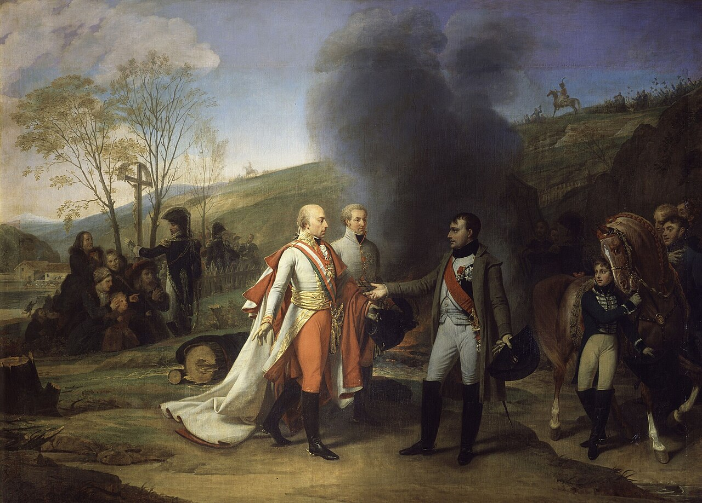
앙투안-장 그로, 「틸지트의 만남」(1810). 1807년 7월 7일, 네만 강 한복판의 뗏목 위에서 두 황제가 단둘이 만났다. 프랑스 측에는 차르의 보트가, 러시아 측에는 황제의 보트가 갈대를 가르며 뗏목으로 다가왔다.
틸지트(Tilsit) 조약, 1807년 7월. 네만 강 한복판의 뗏목 위에서 두 황제가 단둘이 만났다. 알렉산드르 1세는 보나파르트보다 8살 어렸고, 키도 작았고, 매혹적이었다. 두 사람이 뗏목 위에서 첫 인사를 나눌 때 알렉산드르가 한 말 — "폐하, 영국을 저도 미워합니다. 그렇다면 모든 것이 가능합니다." 두 황제는 일주일 동안 뗏목과 강가의 별장에서 매일 만나, 유럽을 갈라 나누었다.
결과로 프로이센은 영토의 절반과 인구의 절반을 잃었다. 폴란드에는 명목상의 바르샤바 공국(Duchy of Warsaw)이 다시 세워졌다. 영국에 대한 대륙 봉쇄령(Continental System)이 모든 유럽 항구가 영국 선박을 받지 않는 시작되었다. 보나파르트는 한 사람의 정상에 도달했다. 그의 권력은 그날 이베리아 반도에서 동프로이센까지 미쳤다. 그 정상은 정확히 그날부터 천천히, 그러나 확실히 내리막을 향하기 시작했다.
곁가지 스물 — 헤겔이 백마를 본 그 날, 그리고 한 통의 편지
예나 전투 전날(1806년 10월 13일), 예나 대학의 무명 강사 게오르크 빌헬름 프리드리히 헤겔(G. W. F. Hegel)은 자기 집 창문에서 황제 나폴레옹이 정찰병들을 거느리고 도시를 빠져나가는 모습을 정확히 보았다. 그날 저녁 그는 자기 친구이자 신학자 프리드리히 니트하머(Friedrich Niethammer)에게 편지를 썼다(원문은 오늘날까지 보존되어 있다): "황제를 이 세계의 영혼(diese Weltseele)을 정찰을 위해 도시를 떠나는 말 위에서 보았네. 한 점에 응축된 한 개인이, 그 말 위에 한 점에서 전 세계로 뻗어 그것을 다스리는 그 모습 그것을 보는 것은 참으로 놀라운 감각이지(Den Kaiser diese Weltseele sah ich durch die Stadt zum Rekognoszieren hinausreiten. Es ist in der Tat eine wunderbare Empfindung, ein solches Individuum zu sehen...)." 그가 그 편지를 쓰던 그 책상 위에는 자기 평생의 책 「정신현상학(Phänomenologie des Geistes)」의 마지막 원고가 놓여 있었다. 다음 날 그 도시에서 그 황제의 군대가 프로이센 군을 한 시간 안에 무너뜨렸다. 헤겔은 평생 자기 철학의 한 핵심 개념인 "세계정신(Weltgeist)"이 그날 자기 눈앞을 백마를 타고 지나갔다고 확신했다. 그러나 같은 날 헤겔이 살던 하숙집은 프랑스군의 약탈로 잿더미가 되었다. 한 철학자가 자기 가구를 모두 잃은 채 「정신현상학」 원고만 가슴에 안고 빠져나왔다. 한 통의 편지와 한 권의 책이 그렇게 19세기의 모든 변증법의 출발점이 되었다.
출전: Hegel-Briefe an Niethammer (1806.10.13) · Marxists Internet Archive · Napoleon.org "Napoleon, Hegelian Hero" · Quillette
곁가지 스물하나 — 로스차일드의 정보, 그리고 한 백금의 가치
같은 시기 프랑크푸르트의 한 유대인 가족 로스차일드(Rothschild)가 유럽 다섯 도시(런던·파리·빈·나폴리·프랑크푸르트)에 다섯 형제를 흩어 두고 자체 통신망을 만들고 있었다. 그들의 정보가 종종 정부의 우편보다 빨랐다. 1815년 워털루 직후 영국에 있던 나탄 로스차일드가 가족 통신망으로 영국 정부보다 24시간 먼저 워털루 승리를 알았다는 일화는 유명하다(그가 그 정보로 영국 국채를 매점매석해 거대한 이익을 보았다는 이야기는 음모론적 과장이지만, 로스차일드 가가 나폴레옹 시대를 가로질러 유럽 금융의 새 권력자가 된 것은 사실이다).
오스만 변경에서의 작은 변화
같은 1807년, 이스탄불에서 술탄 셀림 3세가 보수파에 의해 폐위되었다. 그가 추진한 군 개혁(Nizam-i Cedid)이 예니체리들의 폭동을 불렀다. 6년 뒤 마흐무드 2세가 즉위해 예니체리들을 한꺼번에 학살(1826)하고 오스만의 마지막 근대화를 시작한다. 오스만은 자기 안의 한 작은 군 개혁조차 평생을 두고 싸워야 했다 같은 시기 보나파르트가 유럽 전체를 단숨에 바꿔놓는 동안.
미국 — 풀턴의 증기선
같은 해 8월 17일, 뉴욕의 허드슨 강에서 로버트 풀턴의 증기선 클러몬트호가 처녀항해를 했다. 한 시대의 군대가 진흙길을 걷는 동안, 다른 시대의 산업이 강 위에서 김을 내뿜기 시작했다.
XIV
1808–1813년 · 이베리아 반도
반도전쟁의 늪 — 고야가 그린 5월 3일
강의 듣기
대륙 봉쇄령의 가장 큰 약점은 포르투갈이었다. 영국의 옛 동맹국이었던 포르투갈이 봉쇄에 동참하지 않았다. 1807년 11월, 쥐노 장군이 보나파르트의 명령으로 스페인을 통과해 포르투갈을 점령했다. 그 다음 — 보나파르트는 더 나아갔다. 스페인의 부패한 왕실(카를로스 4세, 아들 페르난도 7세, 그리고 두 사람을 휘두르는 총리 마누엘 데 고도이)을 바욘(Bayonne)에 초대해 강제 폐위시키고, 형 조제프 보나파르트를 스페인 왕좌에 앉혔다.
그것은 그의 평생 최대의 실수였다.
프란시스코 고야, 「1808년 5월 3일」(1814, 프라도). 마드리드 시민들의 5월 2일 봉기를 진압한 프랑스군이, 다음 날 새벽 — 시민들을 골목 끝에서 사격해 처형하는 장면. 한 흰 셔츠의 사내가 두 팔을 벌리고 그리스도의 자세로 총구를 마주하고 있다. 인류 회화사가 한 정복의 도덕적 본질을 그린 가장 위대한 한 점.
1808년 5월 2일(Dos de Mayo), 마드리드 시민들이 봉기했다. 뮈라 원수의 부대가 진압했다. 다음 날 새벽 5월 3일(Tres de Mayo), 항복한 시민들이 골목 끝에서 차례로 처형되었다. 그 장면을 65세의 화가 프란시스코 고야가 6년 뒤 자신의 가장 위대한 두 점의 그림으로 남겼다. 한 그림이 한 시대의 양심을 영원히 적힌 형태로 남기는 일 — 그 한 그림이 그 일이었다.
이후 5년간 보나파르트의 동생 조제프가 마드리드의 왕좌에 앉아 있는 그 5년간 이베리아 반도는 그의 군대의 무덤이 되었다. 30만의 프랑스 군이 점령에 동원되었으나, 그들이 마주한 것은 정규군이 아니라 스페인 농민들의 게릴라였다. "게릴라(guerrilla — 작은 전쟁)"라는 단어 자체가 이 시기 스페인에서 만들어졌다.
1809년 4월, 영국의 아서 웰즐리(곧 웰링턴 공작이 된다)가 1만 5천의 영국 원정군과 함께 포르투갈에 상륙했다. 그가 4년에 걸쳐 천천히 그러나 한 번도 결정적으로 패하지 않으며 프랑스군을 이베리아 반도에서 밀어냈다. 1812년 살라망카 전투, 1813년 비토리아 전투. 1814년에는 그가 피레네 산맥을 넘어 프랑스 본토 남부로 진격해 들어왔다.
보나파르트는 1808년 11월부터 1809년 1월까지 잠깐 직접 이베리아 반도에 출정해 마드리드까지 도달했다가, 다른 위기(오스트리아의 새 도전) 때문에 본국으로 돌아갔다. 그가 떠난 뒤로 그는 다시는 이베리아 반도에 가지 못한다. 그의 부재가 곧 그의 패배였다. 그는 평생 "스페인의 궤양이 나를 갉아먹었다(L ulcère espagnol m a rongé)" 라 후회했다.
곁가지 스물둘 — 형 조제프, 한 왕좌에 앉은 한 신사
스페인 왕이 된 조제프 보나파르트는 동생과는 정반대의 사람이었다. 온화하고, 책을 좋아하고, 자유주의 헌법을 스페인에 도입하려 시도했다. 그러나 한 점령군의 왕은 아무리 좋은 헌법을 가져와도 점령군의 왕일 뿐이었다. 5년 뒤 그는 마드리드를 포기하고 프랑스로 도주했다. 1815년 워털루 패전 뒤 — 그는 미국 뉴저지의 보든타운으로 망명했다. 미국 농장에서 25년을 살다가 1844년 피렌체에서 죽었다. 한 황제의 형이 한 미국 농부로 25년을 산 19세기의 한 기이한 그림이다.
곁가지 스물셋 — 게릴라, 새 전쟁의 발명
이베리아의 산속에서 정복할 수 없는 새 형태의 전쟁이 발명되었다. 정규군과 정규군 사이의 결전이 아니라 한 농민이 자기 밭에서 갑자기 머스킷을 들고 행군 중인 프랑스 보병의 옆구리를 쏘고는 다시 농부가 되는 전쟁. 한 시인 호세 데 에스프론세다는 그 정신을 다섯 단어로 적었다: "산이 우리의 요새요, 밭이 우리의 보급, 그리고 적의 야망이 우리의 무기다." 한 세기 반 뒤, 베트남과 알제리에서 같은 전쟁이 한 시대의 옛 제국들을 무너뜨린다. 한 황제의 첫 패배가 다음 한 세기 모든 제국의 첫 패배의 본보기가 되었다.
라틴아메리카 — 독립의 첫 종소리
스페인 왕실이 자기 동생을 잃고 한 코르시카인의 동생에게 왕좌를 빼앗기는 그 광경을 식민지의 청년들이 지켜보고 있었다. 1810년 베네수엘라·아르헨티나·멕시코에서 동시에 독립의 첫 봉기가 일어났다. 카라카스의 한 청년 시몬 볼리바르가 그 봉기의 한복판에 있었다. 그가 보나파르트를 한때 흠모했다가, 그의 황제 즉위에 절교한 라틴아메리카의 해방자가 된다. 한 황제의 야망이 한 대륙의 식민지를 자유롭게 했다.
러시아 — 그림자가 다시 다가오다
차르 알렉산드르 1세는 틸지트의 우정을 유지하는 척하면서 — 영국과의 무역을 계속 묵인했다. 대륙 봉쇄령에 그가 협조하지 않는다는 사실이 보나파르트의 1812년 결정을 결국 만든다. 한 황제가 진흙에 갇혀 있는 사이 다른 황제가 다음 한 수를 준비하고 있었다.
XV
1809–1811년 · 빈 · 파리
바그람·이혼·합스부르크 신부 — 독수리 새끼의 탄생
강의 듣기
보나파르트가 이베리아에 가 있는 사이 합스부르크의 프란츠 1세가 다시 도전했다. 제5차 대불 동맹(오스트리아·영국). 1809년 5월, 보나파르트는 두 번째로 빈을 무혈 점령했다. 그러나 5월 21–22일 도나우 강 한가운데의 작은 섬 아스페른-에슬링(Aspern-Essling)에서 그는 평생 첫 패배에 가까운 무승부를 당했다. 카를 대공(프란츠의 동생)의 부대가 보나파르트의 부대를 거의 강 속에 빠뜨릴 뻔했다. 보나파르트의 부관 란(Lannes) 원수 그가 가장 사랑했던 부관 중 하나 가 그 전투에서 두 다리에 포탄을 맞고 죽었다. 보나파르트는 그의 시신 옆에서 한 시간을 울었다.
6주 뒤, 7월 5–6일 바그람(Wagram)에서 그는 다시 결정적으로 이겼다. 그러나 그 승리는 옛 아우스터리츠의 그 우아한 승리가 아니었다. 18만 대 14만. 보나파르트의 동원력이 합스부르크를 양으로 짓눌렀다. 쇤브룬 조약으로 오스트리아는 다시 영토를 양도했다.
같은 무렵 보나파르트의 사적인 결단이 그의 정치를 결정했다. 그에게 후사가 없었다. 14년의 결혼 동안 조세핀은 아이를 낳지 못했다(첫 결혼의 두 자식이 있는 것을 보면 문제는 조세핀이 아니라 어쩌면 두 사람 사이의 무엇이었다는 추측도 있다). 그가 다른 여자에게서 사생아를 본 사실로 자기에게 후사 능력이 있다는 확신을 얻자 그는 결정했다.
1809년 12월 15일 — 황제는 황후의 이혼 선언서에 서명하라 명령했다. 조세핀은 통곡하며 그의 발 아래 엎드렸다. 그는 그도 울며 그러나 단호하게 서명을 받아냈다. 사료가 전하기를, 다음 날 밤 그가 그녀의 침실로 찾아가 마지막 밤을 함께 보냈다 한다. 그 다음 그녀는 말메종(Malmaison) 별궁으로 물러나, 그가 죽기 전까지 거기 살았다.
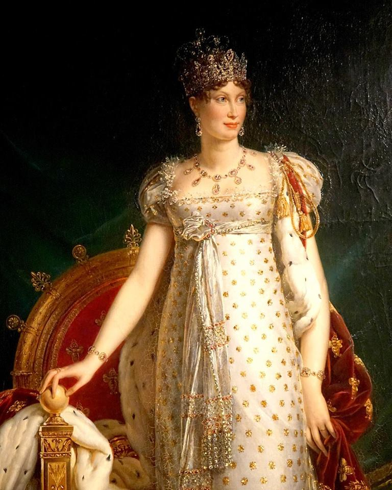
마리 루이즈(Marie-Louise) 황후 · 합스부르크의 프란츠 1세의 장녀. 1810년 결혼 당시 19세. 평생 프랑스인을 야만인이라 가르침받은 합스부르크의 공주가 그 야만인의 우두머리와 결혼한 것이다.
1810년 3월 11일, 빈에서 대리혼(對代婚)으로 보나파르트의 부재 중 베르티에 원수가 신랑 대리역을 했다. 신부는 18살의 마리 루이즈(Marie-Louise). 합스부르크의 프란츠 1세의 장녀였다. 합스부르크의 한 공주가 그 합스부르크를 두 번 무릎 꿇린 황제와 결혼했다. 빈의 옛 공주는 평생 — 자기 어머니 마리 앙투아네트를 죽인 한 시대의 후계자와 산다. 그녀는 그러나 결혼생활 처음 몇 달간 보나파르트를 진정으로 사랑하기 시작했다. 그가 그녀에게 다정했다 한다.
1811년 3월 20일 새벽 튀일리 궁에서 마리 루이즈가 한 사내아이를 낳았다. 보나파르트는 출산이 어렵다는 의사의 보고를 받자, "황후를 우선으로 살리시오. 아이는 또 가질 수 있소"라 외쳤다 한다. 두 사람 모두 무사했다. 황제는 그 자리에서 그 아이에게 「로마 왕(Roi de Rome)」 칭호를 주었다. 후에 「독수리 새끼(L Aiglon)」라 불린다 — 나폴레옹 2세.
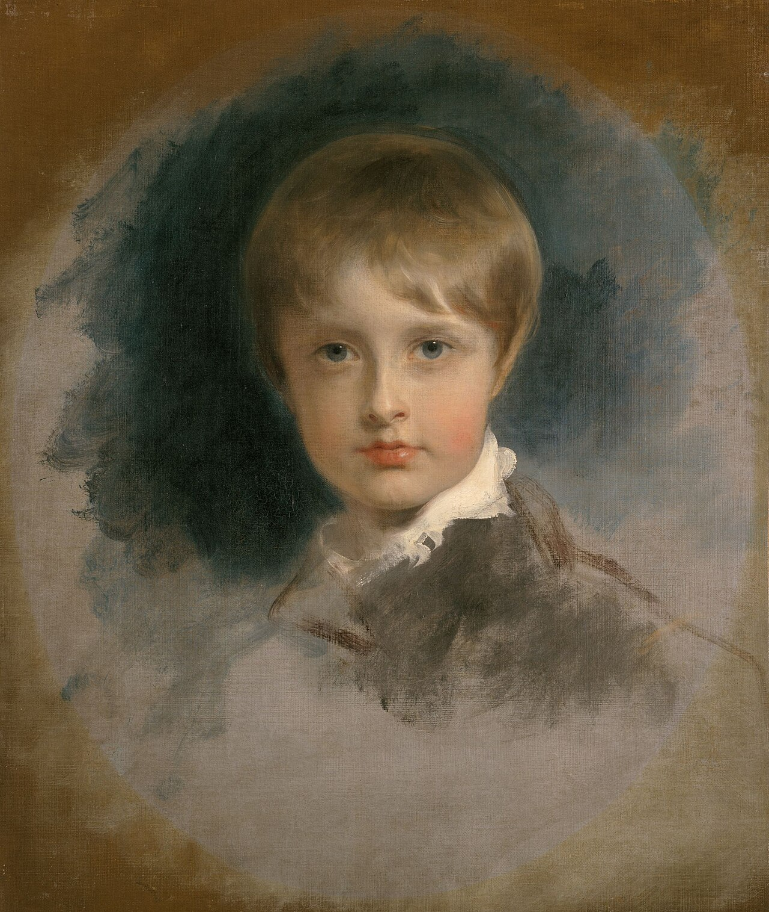
토머스 로런스, 「로마 왕(나폴레옹 2세)」(1818). 그는 자기 아버지를 두 살 때 마지막으로 보았다. 그 후로 자기 어머니 가문(합스부르크)의 빈에서 사실상의 감금 상태로 자랐다. 21살에 결핵으로 죽었다. 자기 자녀를 남기지 못했다. 보나파르트의 직계는 그렇게 한 세대 만에 끝났다.
곁가지 스물넷 — 말메종의 조세핀
이혼 후 조세핀은 파리 외곽의 말메종(Malmaison) 별궁에 살았다. 보나파르트가 그녀의 옛 칭호 황후 를 유지할 수 있게 해주었다. 그녀는 그곳에서 5년을 살았다. 정원을 가꾸고, 장미를 모았고(그녀의 장미 정원은 유럽에서 가장 유명했다), 자식들과 손자들 외젠의 아이들, 오르탕스의 아이들(그 중 한 명이 미래의 나폴레옹 3세) 과 함께 시간을 보냈다. 1814년 5월 29일, 그녀가 죽었다. 51세였다. 그가 엘바에 있던 동안. 사망 직전 그녀의 마지막 말 — "보나파르트, 엘바, 로마 왕". 그가 평생 사랑한 세 가지가 한 호흡에 적혀 있었다.
곁가지 스물다섯 — 한 합스부르크 공주가 한 코르시카인을 만난 이야기
마리 루이즈는 어릴 때 어머니 마리아 테레지아 사후 가정교사로부터 "보나파르트는 인간이 아니라 괴물이다"고 배웠다. 그녀가 결혼 직전 빈에서 파리로 4주간의 마차 여행을 하는 동안 그녀는 자기 일기에 적었다: "내가 가서 만나는 사람이 인간이라기보다는 운명에 가까울까봐 두렵다." 첫 만남에서 보나파르트는 그녀의 여행마차를 도중에 마중나가 직접 마차 안으로 뛰어들었다. 그녀의 손을 잡고 — 종일 끊지 않았다. 그녀는 곧 그를 한 사람으로 사랑했다. 그러나 그가 몰락한 뒤 그녀는 아들과 함께 빈으로 돌아가 자기 아버지의 그늘 안에 들어가 한때의 황후에서 한 합스부르크 공주로 다시 살았다. 새 남편(나이페르크 백작)을 두고 보나파르트가 세인트헬레나에서 죽는 동안 그녀는 한 번도 그에게 가지 않았다.
일본 — 같은 시간 에도에서
로마 왕이 태어난 1811년, 일본 에도에서는 도쿠가와 이에나리의 치세 한복판이었다. 같은 해 골로닌(Golovnin) 사건 러시아 해군 장교가 쿠릴 열도에서 일본에 억류된 사건 이 일어났다. 일본의 쇄국이 유럽의 한 황제의 야망과는 무관하게 자체의 균열을 보이기 시작한 그 첫 신호였다.
청 — 같은 시간 베이징에서
같은 1811년 청 가경제(嘉慶帝)의 치세. 이 황제는 보나파르트의 야망에 대해 알았다. 그러나 그것이 자기 시대의 문제가 아니라 여겼다. 청 제국은 자기 안의 백련교 봉기에 더 신경 쓰고 있었다. 한 세대 뒤 — 그의 아들 도광제(道光帝)가 아편전쟁(1840)을 맞는다. 보나파르트가 흔든 유럽이 동방을 30년 뒤에 흔든다.
Tabula II · Imperium Maximum MDCCCXII
1812년 여름 — 그랜드 아르메 60만, 네만 강을 건너다
프랑스 본토 + 위성국 (제국 절정)강제 동맹 (오스트리아·프로이센)러시아 (적국)스페인 (반도전쟁 진행 중)진군 경로 (촘촘 점선)퇴각 (성긴 점선)
한 코르시카 청년이 그린 유럽 지도의 절정. 리스본에서 비스와 강까지, 그가 직접 다스리거나 위성국으로 거느린 영역이 자기 외할아버지 카를로의 시대에 그가 본 모든 유럽보다 컸다. 그러나 같은 지도가 네만 강을 건넌 그 순간(1812년 6월 24일) 무너지기 시작한다. 그가 데리고 간 약 60만의 그랜드 아르메 중 6개월 뒤 — 비셀스카(Wiselska)의 얼음에서 돌아온 사람은 약 3만 명. 같은 해 멀리 대서양 건너편에서는 미국이 영국에 선전포고(1812년 6월 18일)를 했다 — 그가 네만을 건너기 일주일 전이었다. 한 황제의 동방 진군이 다른 한 신생국의 서방 독립전쟁을 같은 한 달에 끌어냈다.
XVI
1812년 6월 – 12월 · 러시아
러시아 원정 — 보로디노·모스크바·베레지나
강의 듣기
한 황제가 한 황제를 길들이려 했다. 6월에 60만이 강을 건넜다. 12월에 4만이 같은 강을 건너 돌아왔다. 그 사이 한 시대의 기울기가 결정되었다.
틸지트의 우정은 거짓이었다. 알렉산드르 1세는 대륙 봉쇄령에 협력하지 않았다. 러시아 항구는 영국 선박을 받았다. 1812년 봄, 보나파르트는 차르를 다시 길들이기 위해 인류 역사상 그때까지 가장 큰 군대를 모았다. 대군(Grande Armée), 약 60만에서 68만. 프랑스인은 그 중 절반 이하였다. 폴란드인, 독일인, 이탈리아인, 네덜란드인, 스위스인, 크로아티아인, 심지어 포르투갈인까지 — 한 황제의 한 부대를 이루었다. 군대보다 — 한 유럽이 행군해 들어갔다.
1812년 6월 24일, 대군이 네만 강을 건넜다 — 5년 전 보나파르트와 알렉산드르가 뗏목 위에서 만난 바로 그 강. 알렉산드르는 빌나(Vilna)에서 연회 중에 그 소식을 받았다. 그가 그날 부관에게 한 말 — "내가 평화를 청할 일은 없다. 보나파르트가 모스크바에 들어가도 마찬가지다. 그 사이 추위와 거리와 굶주림이 우리를 위해 싸울 것이다."
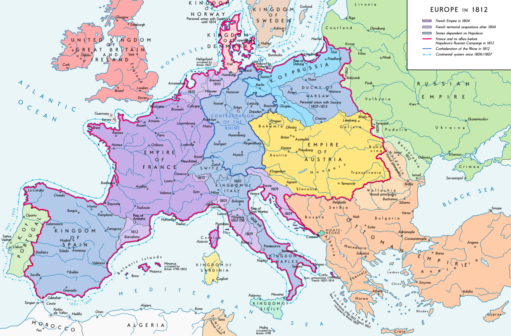
1812년의 유럽 · 프랑스 제국과 그 위성국·동맹국이 유럽 대륙의 거의 전부를 차지했다. 푸른색이 직접 통치, 옅은 색이 위성. 그러나 그 푸른색의 동쪽 끝과 서쪽 끝(러시아와 영국)이 그를 무너뜨린다.
러시아군은 정면 회전을 피했다. 바클라이 데 톨리(Barclay de Tolly)와 바그라티온(Bagration)의 두 군이 보나파르트보다 빠르게 동쪽으로 후퇴했다. 후퇴하며 마을과 밭과 곡물 창고를 모두 불태웠다. 보나파르트의 60만 군대는 자기 보급선이 끊긴 채 빈 들판 위를 비뚤어지게 행군했다. 매일 수천이 전투가 아니라 굶주림과 질병으로 쓰러졌다.
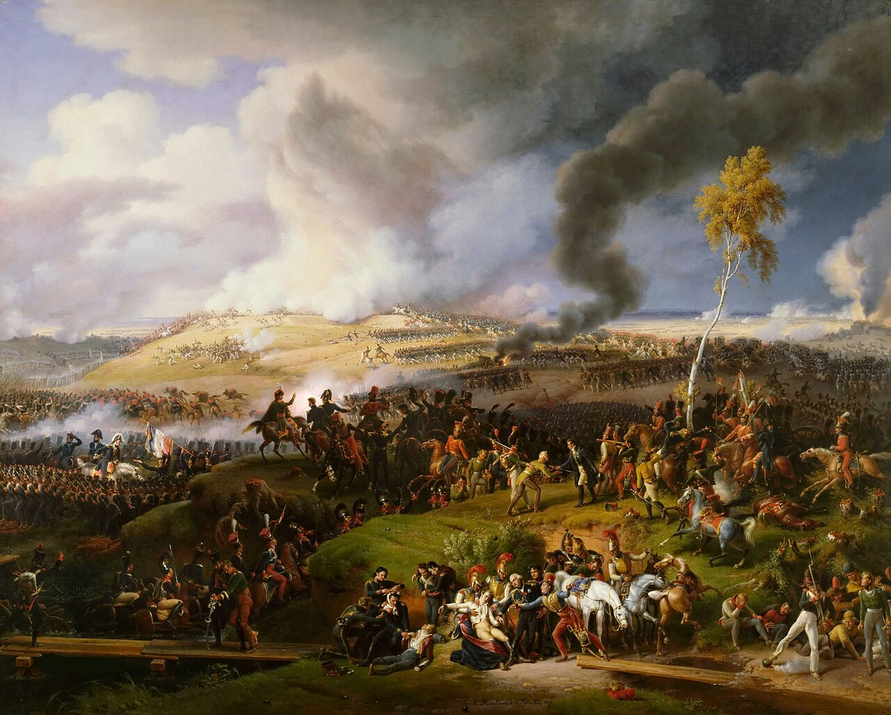
루이-프랑수아 르죈, 「보로디노 전투」. 1812년 9월 7일, 모스크바 서쪽 125km. 양측 25만이 한 들판에서 부딪쳤다. 단 하루에 사망자만 7만 명 이상 군사사 단일 전투 사망률의 한 정점이다.
보로디노(Borodino) 전투, 1812년 9월 7일. 새 러시아 사령관 미하일 쿠투조프(Mikhail Kutuzov)가 마침내 모스크바 앞에서 자기 군대를 멈춰 세웠다. 그는 자기 백성에게 한 결정적 전투를 보여줘야 했다. 13만 5천의 프랑스 측, 12만 5천의 러시아 측. 하루 만에 양측 합쳐 약 7만 명이 죽거나 부상했다. 단일 전투의 사망률에서 그날까지 인류 역사상 최악이었다. 군대 두 곳 모두가 다음 날 새벽 서로 같은 자리에 머물러 있었다. 그러나 그 밤 — 쿠투조프는 다시 후퇴를 명령했다. "러시아가 무너졌다 — 그러나 군대가 무너지지는 않았다. 모스크바는 러시아가 아니다."
9월 14일, 보나파르트는 모스크바에 입성했다. 도시는 비어 있었다. 시민들이 거의 모두 도주한 상태였다. 그가 크렘린에 자리잡은 다음 날 — 모스크바가 불타기 시작했다. 동시에 도시의 30개 지점에서 화재가 났다. 시 총독 표도르 로스토프친(Fyodor Rostopchin)이 도주 전 도시의 모든 소방펌프를 부수고, 죄수들에게 횃불을 들려 풀어놓았다는 사실이 뒤에 밝혀졌다. 4일간의 화재로 도시의 4분의 3이 잿더미가 되었다. 보나파르트는 빈 폐허 위에 35일을 앉아 있었다. 차르의 강화 사절을 기다렸다. 사절은 오지 않았다.
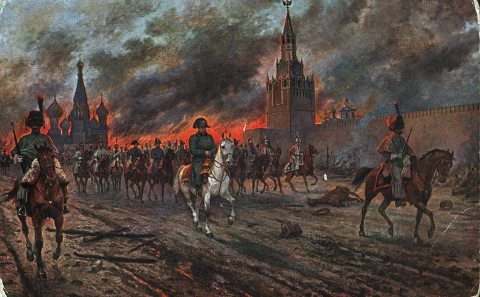
모스크바의 화재, 1812년 9월 · 알브레히트 아담 그림. 한 도시가 자기 자신을 점령자에게 빼앗기지 않으려 불태웠다. 보나파르트는 평생 그 광경을 잊지 못했다 — "그것은 인간의 행동이 아니었다. 그것은 일종의 자연재해였다."
10월 19일, 보나파르트는 마침내 후퇴를 명령했다. 너무 늦었다. 이미 첫 눈이 내리고 있었다. 그가 같은 길로 후퇴할 수밖에 없었다. 그 길은 이미 모든 보급을 약탈한 길이었다. 11월 초 — 영하 30도. 부대는 군대가 아니라 굶주린 그림자들의 행렬이 되었다. 코사크 기병들이 매일 그들의 뒤꽁무니와 옆구리를 물어뜯었다. 매일 수천이 도로변에 쓰러져 — 다시 일어나지 못했다.
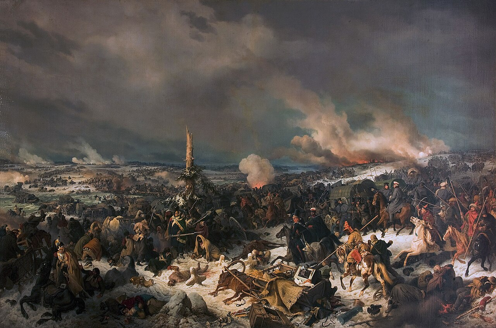
페터 폰 헤스, 「베레지나 강의 후퇴」. 1812년 11월 26–29일. 강은 절반쯤 얼어 있었고, 부대는 두 개의 임시 다리로 건너야 했다. 끝에 도착한 부대 뒤에서 다리가 폭파되었을 때 수만의 부상병과 민간인이 강에 빠져 죽거나 동결사했다. 프랑스어 une bérézina가 오늘날까지 — "완벽한 재앙"의 동의어로 쓰인다.
베레지나(Berezina) 강 도하. 11월 26–29일. 강의 임시 다리 두 개를 통해 4만의 잔여 부대가 코사크의 추격을 따돌리며 강을 건넜다. 보나파르트 자신은 12월 5일, 스모르고니(Smorgoni)에서 군대를 뮈라에게 맡기고 평민 옷을 입고 마차에 올라 파리를 향해 출발했다. 14일 만에 그가 파리에 도착했다. 본국에 그가 죽었다는 헛소문이 퍼져 있었고, 한 미친 장군 말레(Malet)가 일시 쿠데타를 시도한 흔적이 있었다. 그가 살아 돌아왔다는 사실 자체로 정권을 다시 잡을 수 있었다.
그러나 — 그가 돌아온 것은 그 자신만이었다. 그가 6월에 데려간 60만 중 — 약 4만이 12월에 강을 건너 돌아왔다. 다른 16만은 포로로, 나머지는 동토(凍土) 위 어딘가에 누워 있었다. 한 황제의 야망이 한 군대를 모두 한 나라의 들판에 묻었다.
곁가지 스물여섯 — 모스크바를 누가 불태웠는가
이 질문은 한 세기 반 동안 논쟁이었다. 보나파르트는 자기 사후 「세인트헬레나 회상록」에서 러시아인의 자작극이라 단언했다. 톨스토이는 「전쟁과 평화」에서 도시민들이 자발적으로, 누가 명령하지 않아도, 자기 도시를 적에게 안 내주려 불태웠다고 그렸다(그 자체가 톨스토이의 한 위대한 역사 철학이었다). 동시대 증거들이 점차 표도르 로스토프친 총독의 사전 명령과 그가 풀어놓은 죄수 부대가 결정적인 방화범이었다는 결론으로 모이고 있다. 한 시민이 자기 도시를 잃지 않기 위해 자기 도시를 불태우는 일 그것이 19세기 민족주의의 한 첫 광경이었다. 보나파르트가 흔든 유럽이 그 유럽에 민족이라는 새 종교를 가져다주었다.
곁가지 스물일곱 "Imperial Guard ne se rend pas" 한 신화의 출생
러시아 원정에서 그리고 곧 워털루에서 보나파르트의 마지막 정예부대 황실근위대(Garde Impériale)가 끝까지 항복하지 않은 신화가 만들어졌다. 워털루의 사령관 피에르 캉브론(Pierre Cambronne)이 영국군의 항복 권유에 "황실근위대는 죽지, 항복하지 않는다(La Garde meurt mais ne se rend pas)"라 답했다는 일화가 19세기 프랑스의 한 국민 명문장이 된다. 실제로는 그가 한 단어로만 "메르드(Merde!)"라 답했다는 설이 더 강하다. 그 단어 "똥(屎)"이라는 욕설 이 프랑스어에서 그 후로 "캉브론의 말(le mot de Cambronne)"이라 우아하게 불리게 된다. 신화는 늘 진실보다 잘 다듬어진다.
XVII
1813년 10월 – 1814년 4월 · 라이프치히 → 파리 → 엘바
라이프치히 → 파리 함락 → 엘바
강의 듣기
러시아 원정 실패의 소식이 유럽 전체에 한 신호를 보냈다. 제6차 대불 동맹이 결성되었다 러시아·프로이센·오스트리아·영국·스웨덴(보나파르트의 옛 부관 베르나도트가 스웨덴 왕세자가 되어 옛 주인의 적으로 돌아섰다). 보나파르트는 본국에서 다시 30만의 군대를 거의 모두 미성년 신병으로 모았다. 그는 1813년 봄 독일로 진격했다. 5월에 뤼첸(Lützen)·바우첸(Bautzen)에서 작은 승리를 거뒀다. 그러나 — 자신의 옛 기병이 더는 없다는 사실을 깨달았다(러시아의 추위가 모든 말을 죽였다). 추격할 수 없는 승리는 승리가 아니었다.
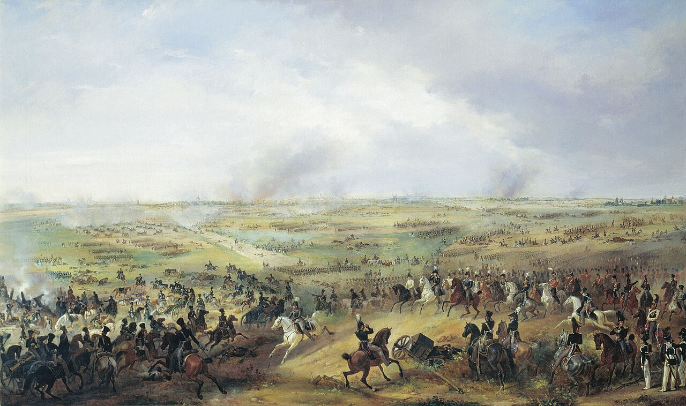
알렉산더 자우어바이트, 「라이프치히 전투」. 1813년 10월 16–19일. 제국민들의 전투(Völkerschlacht). 보나파르트의 19만 5천 대 동맹군의 36만 5천. 4일간의 전투로 양측 합쳐 약 10만의 사상자. 단일 전투로 1차 세계대전 이전 최대 규모.
라이프치히 전투(Battle of Leipzig), 1813년 10월 16–19일. 보나파르트의 19만 5천이 동맹군 36만 5천에 사방에서 둘러싸였다. 4일간의 전투 끝에 보나파르트는 후퇴를 명령했다. 후퇴 중 라이프치히 시 외곽의 엘스터(Elster) 강 다리가 너무 일찍 폭파되었다. 폴란드의 영웅 유제프 포니아토프스키(Józef Poniatowski) 원수 보나파르트가 막 원수로 진급시킨 그 가 다리가 끊긴 강을 헤엄쳐 건너려다 부상한 몸으로 익사했다. 다리 동쪽에 남겨진 3만의 프랑스 부대가 포로가 되었다. 독일이 보나파르트에게서 떨어졌다.
1814년 겨울 동맹군이 마침내 프랑스 본토로 진군해 들어왔다. 동에서 슈바르첸베르크, 북에서 블뤼허, 남에서 웰링턴. 보나파르트는 남은 7만의 부대로 자기 본토에서 평생 가장 정교한 일련의 작전(la campagne de France)을 펼쳤다. 샹포베르·몽미라이·보샹·몽트로에서 일주일 사이에 동맹군 분견대를 차례로 격파했다. 군사사가들이 이 시기 그의 작전 솜씨를 평생 가장 빛났던 순간으로 꼽는다. 그러나 솜씨로는 양을 이기지 못했다.
1814년 3월 31일, 파리가 함락되었다. 황제의 마지막 부하 마르몽(Marmont) 원수가 보나파르트의 명령 없이 동맹군에 도시를 항복시켰다. 보나파르트는 분노했지만 이미 너무 늦었다. 4월 4일, 그의 원수들이 퐁텐블로 궁전에서 사실상 그에게 퇴위를 강요했다. 네(Ney) 원수가 대변인으로 말했다: "폐하, 군대는 더 이상 행진하지 않겠습니다. 군대는 자기 자식들 곁으로 돌아가기를 원합니다."
4월 6일, 보나파르트는 무조건 퇴위서에 서명했다. 4월 12–13일 밤 그는 자기 군의관이 늘 가지고 다닌 옛 모스크바 후퇴 시 자살용으로 준비한 독약 아편 + 벨라돈나의 혼합 을 마셨다. 2년이 지난 그 약은 효력이 약해져 있었다. 그는 새벽에 토하며 깨어났다. 자살에 실패한 그가 동맹군이 그에게 준 엘바(Elba) 섬 그가 태어난 코르시카에서 50km 떨어진 작은 섬으로 망명을 떠났다.
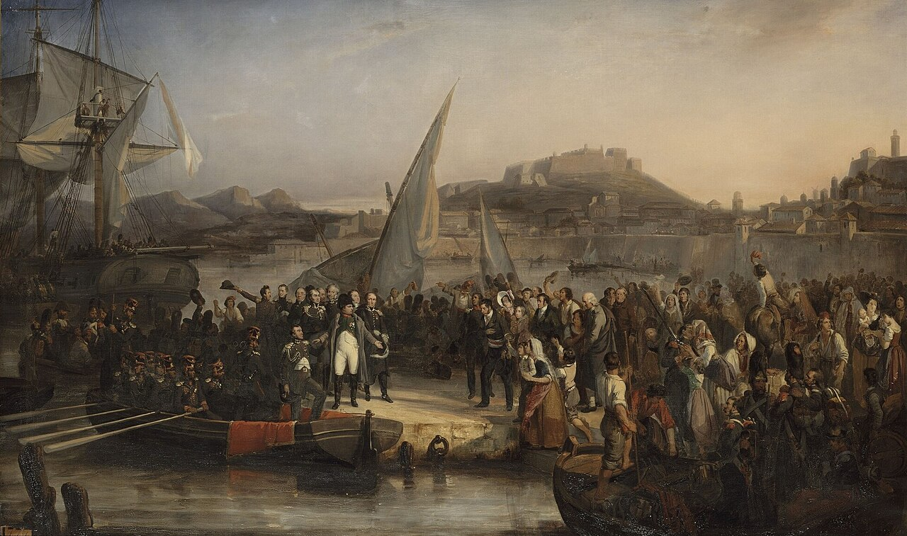
요제프 보메, 「엘바를 떠나는 나폴레옹 1세, 1815년 2월 26일」. 한 작은 섬의 한 작은 황제. 그는 10개월간 그 섬을 마치 한 작은 프랑스인 양 다스렸다.
4월 20일 — 퐁텐블로의 작별. 그가 자기 황실근위대에게 마지막 인사를 했다. "내 옛 친구들이여, 나는 그대들과 작별한다. 20년간 그대들은 나를 영광과 명예의 길로 따라왔다 ... 나는 그대들 모두를 안을 수 없다. 그러나 나는 그대들의 사령관을 안겠다. 사령관, 이리 오시오 — 베르티에, 이리 오시오." 그가 부관 베르티에를 안았다. 부대 전체가 울었다. 일주일 뒤 — 그가 엘바로 떠났다. 같은 시기 그를 그 한 사람의 황후 14살의 마리 루이즈와 3살의 아들 로마 왕 은 합스부르크의 외할아버지 곁으로 빈으로 호송되었다. 그는 평생 아들을 다시 보지 못한다.
곁가지 스물여덟 — 베르나도트, 한 부관이 한 왕좌를 얻은 이야기
보나파르트의 옛 원수 중 한 명 장-바티스트 베르나도트 가 스웨덴의 한 왕좌를 얻었다. 스웨덴 왕 칼 13세에게 후사가 없자, 1810년 스웨덴 의회가 한 적국의 한 원수를 자기 왕세자(나중에 칼 14세)로 선출했다. 그가 곧 자기 옛 사령관에게 등을 돌리고 1813년 동맹군 편에서 라이프치히에 참여했다. 그가 시조가 된 베르나도트 왕조가 오늘날까지 스웨덴을 다스린다(현재의 칼 16세 구스타프 왕이 그 후손). 한 코르시카인의 한 부관의 핏줄이 21세기 스웨덴 왕좌에 여전히 앉아 있다.
XVIII
1815년 3월 1일 – 6월 22일 · 백일천하
백일천하 — 워털루의 진흙
강의 듣기
엘바 섬에서 황제는 10개월간 자기 작은 영지를 마치 한 작은 제국인 양 다스렸다. 우편을 정비하고, 도로를 닦고, 광산을 운영했다. 동시에 빈에서 진행 중인 회의가 자기 운명을 어떻게 결정짓고 있는지 빠짐없이 정보를 받고 있었다. 부르봉 왕조가 파리에서 옛 망명귀족들의 자존심으로 빠르게 다시 미움받고 있다는 사실. 동맹국들이 빈 회의에서 영토 분쟁으로 서로 거의 전쟁 직전이라는 사실(러시아와 프로이센이 폴란드·작센 분할로 영국·오스트리아·프랑스와 대립). 그가 다시 들어가도 어쩌면 받아들여질 수 있다는 한 가능성.
1815년 2월 26일 그는 영국 함대의 경비가 잠깐 느슨한 틈을 타 1,000명의 옛 황실근위대를 데리고 7척의 작은 배에 올라 엘바를 떠났다. 3월 1일, 프랑스 남부 칸(Cannes) 근처의 골프-쥐앙(Golfe-Juan) 해변에 상륙했다. 그가 부하들에게 외친 말 "독수리는 종탑에서 종탑으로 노트르담의 탑 위까지 날아갈 것이다."
이후의 20일이 19세기 한 가장 특별한 광경이다. 부르봉 왕조가 그를 잡거나 쏘기 위해 부대를 차례로 보냈다. 한 부대씩 그를 만나는 순간 그를 잡지 않고 그에게 합류했다. 3월 7일, 라프레(Laffrey) 근처의 한 좁은 길에서 그를 향해 머스킷을 겨눈 한 보병 대대 앞에 황제가 혼자 걸어 나갔다. 그의 옛 회색 군용 외투를 벌리며 — 그가 말했다: "여기에 그대들의 황제가 있다. 그를 쏘고 싶은 자가 있다면 쏘아라." 30초의 정적 뒤 부대 전체가 "황제 만세(Vive l Empereur!)" 를 외쳤다.
3월 14일, 부르봉이 그를 잡으라 보낸 한 사람 그의 옛 원수 미셸 네(Michel Ney) 가 "황제를 쇠우리에 가둬 파리로 데려오겠다" 약속했던 그가 부대 전체와 함께 황제에게 합류했다. 3월 20일, 보나파르트가 한 발의 총탄도 발사되지 않고 파리의 튀일리 궁에 다시 들어섰다. 부르봉 왕 루이 18세는 전날 밤 도주했다. 한 황제의 두 번째 즉위였다.
동맹국들의 답은 즉각적이었다. 빈 회의가 며칠 만에 합의를 마무리하고 그를 "인류의 적(l ennemi du genre humain)"으로 공식 선포했다. 영국·프로이센·오스트리아·러시아의 새 군대가 다시 모이기 시작했다. 그가 평생 가장 짧은 시간 동안 가장 큰 군대를 모아야 했다. 그가 동원할 수 있는 시간은 3개월이었다.
그가 결정한 작전은 단순하고 대담했다. 영국군(웰링턴, 9만 5천)과 프로이센군(블뤼허, 12만)이 벨기에에서 합류하기 전에 두 군대를 따로따로 격파한다. 그가 12만 명의 부대로 6월 15일 벨기에로 진군했다. 6월 16일 리니(Ligny)에서 블뤼허의 프로이센 군을 격파했다(블뤼허 자신은 한 번 말 아래에 깔렸으나, 한 부관이 그를 끌어내 살려 도주시켰다 그 작은 사실이 다음 날의 운명을 결정한다). 같은 날 네 원수가 카트르 브라(Quatre Bras)에서 웰링턴을 견제했지만 결정적으로 격파하지는 못했다.
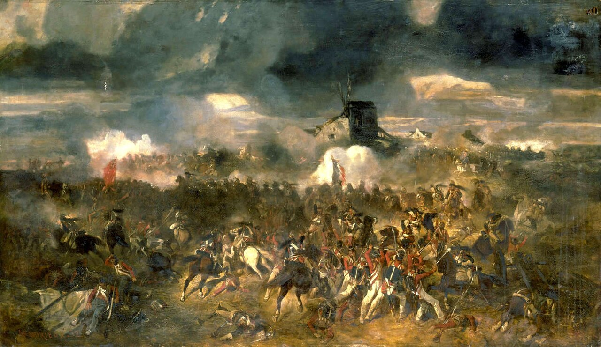
클레망 오귀스트 앙드리외, 「워털루 전투」. 1815년 6월 18일 일요일. 벨기에 워털루 남쪽의 한 좁은 들판에서 한 시대가 끝났다.
워털루(Waterloo) 전투, 1815년 6월 18일. 보나파르트 7만 3천 대 웰링턴 6만 8천. 핵심은 둘 중 한 군이 자기 동맹군과 합류하기 전에 다른 군을 깰 수 있느냐였다. 보나파르트는 부관 그루시(Grouchy) 원수에게 3만 3천을 떼어주며 "블뤼허의 프로이센 군을 무슨 일이 있어도 추격해 웰링턴과 합류시키지 마라" 명령했다. 그루시는 그 명령을 너무 글자 그대로 따랐다. 자기 좌측에서 일찍이 포성이 들렸을 때 자기 부관들이 "그쪽으로 가야 합니다" 권했음에도 그는 자신의 좁은 길을 계속 따라갔다.
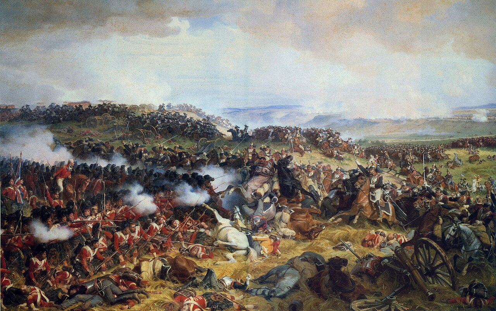
워털루의 흉갑기병 돌격 · 헨리 게이텐스 그림. 네 원수가 8천의 흉갑기병을 영국군 보병의 사각방진(square)을 향해 11번 정면 돌격시켰다. 모든 돌격이 사각방진의 머스킷 벽 앞에서 부서졌다. 그 광경을 본 웰링턴이 한 말 — "두 번 보고 싶지 않은 광경(I never wish to see such a thing again)."
오전 11시 보나파르트의 공격이 시작되었다. 종일 진흙 진흙 진흙. 전날 밤의 폭우가 들판을 늪으로 만들었다. 보나파르트의 포대가 평소처럼 작동하지 않았다(진흙 위에서 포탄이 튀지 않고 박혔다). 네 원수의 흉갑기병 돌격은 영국군 사각방진 앞에서 부서졌다. 영국군 사령관 웰링턴은 자기 부하들에게 "버텨라(Hold the line, lads)" 만을 종일 반복했다. 그가 자기 군대가 "이긴 게 아니라 지지 않은 군대" 라 후에 평했다.
오후 4시 보나파르트가 자기 망원경으로 동쪽 숲에서 검은 점들이 다가오는 것을 보았다. "그루시인가?" — 그가 부관에게 물었다. 부관이 보고 답했다: "폐하 프로이센입니다. 블뤼허입니다." 리니에서 거의 죽을 뻔한 72세의 블뤼허가 자기 군대를 다시 일으켜 자기 동맹군과 합류하러 진흙 길을 종일 행군해온 것이었다.
저녁 7시 30분, 보나파르트는 마지막 카드 자기 황실근위대 평생 한 번도 전투에서 진 적 없는 자기 부하 중에서도 가장 정예 를 영국군 중앙에 직접 던졌다. 영국군이 진흙 비탈 위에서 자기 위치를 마지막 한 줄 까지 지켰다. 황실근위대가 처음으로 후퇴했다. 그 광경을 본 프랑스 전군이 한 외침을 동시에 외쳤다: "근위대가 후퇴한다(La Garde recule)!" 그 외침과 함께 그의 군대가 사라졌다. 진흙 길을 다시 그 코르시카 청년이 23년 전 시작했던 그 자리로 흘러갔다.
곁가지 스물아홉 — 황제가 잠을 못 잔 하룻밤
워털루 전날 밤, 보나파르트는 한 밤 거의 잠을 못 잤다. 사료가 전하는 한 이유 그가 평생 시달려온 치질이 그날 밤 특히 심했다는 설(說). 부관 라스 카세스가 「세인트헬레나 회상록」에 적었다. 그가 평소에 매일 말 위에서 10시간을 앉아 보내던 그 자세 가 그날 불가능했다는 사실. 그래서 그가 평소처럼 전장의 가장 앞에 나가지 못하고 자기 본부의 농가 안에 더 머물러 있었다는 사실. 한 작은 신체의 약함이 한 황제의 한 결정적 전투를 다르게 만든 일. 신체가 역사를 만든다.
곁가지 서른 — 그루시는 어디에 있었는가
워털루의 정확히 같은 시각 그루시 원수의 3만 3천은 왈렝(Wavre)에서 사실 블뤼허의 후위(後衛)와 작은 전투를 하고 있었다. 즉 그는 명령을 따랐다 블뤼허를 추격했다. 그러나 그는 자기 좌측에서 들리는 워털루의 거대한 포성을 듣고도 자기 부관들의 절박한 권유 "포성을 향해 행군해야 합니다(Marcher au canon)" 라는 군의 한 오랜 원칙 을 무시했다. 그가 워털루에 4시간만 일찍 도착했더라면 그날의 결과는 달랐을지 모른다. 그러나 그는 영원히 도착하지 않았다. 워털루의 진짜 패자(敗者)는 어쩌면 그루시 한 사람이었다.
4일 뒤 6월 22일, 파리로 돌아온 보나파르트는 두 번째 퇴위서에 서명했다. 그는 미국으로 그의 형 조제프처럼 망명을 시도했다. 로슈포르(Rochefort) 항에서 영국 함대가 그를 봉쇄했다. 7월 15일, 그가 영국 군함 HMS 벨레로폰(Bellerophon)에 정장(正裝)을 입고 올랐다. 그는 영국 신사들의 "관대함"을 믿었다. 그가 받은 것은 대서양 한복판의 한 작은 섬이었다.
Tabula III · Exitium MDCCCXV
1815년 — 엘바에서 워털루를 거쳐 세인트헬레나로
회복된 부르봉 프랑스 (1815)승전국 (영국·프로이센·러시아·오스트리아)육로 (백일천하 진군)해로 (엘바 탈출 → 유배)
한 사내가 한 해 동안 두 번 패한 길. 엘바에서 1815년 2월 26일 700명의 옛 근위병과 함께 탈출해, 3월 1일 칸 인근 골프-쥐앙에 상륙했다. 그 다음의 20일은 인류사가 본 가장 기이한 행진의 하나다. 그를 막으러 보낸 군대들이 그를 보는 순간 그 옆에 줄을 섰다. 단 한 발의 총탄도 쏘이지 않은 채 그는 파리로 돌아왔다(3월 20일). 그러나 백 일 뒤 워털루(6월 18일)의 비 내리는 진흙이 그를 영원히 다시 멈춰 세웠다. 같은 해 빈에서 모인 네 강대국의 회의가 그가 흩어놓은 유럽 지도를 거의 옛 모습으로 다시 꿰매고 있었다. 영국의 함대가 그를 대서양 한복판 작은 화산섬에 데려갔다.
XIX
1815년 10월 16일 – 1821년 5월 5일 · 세인트헬레나
세인트헬레나 — 비소와 마지막 한 마디
강의 듣기
영국이 그를 가두기로 한 자리는 아프리카 서쪽 해안에서 1,900km, 남아메리카에서 3,200km 떨어진 대서양 한복판의 16km × 8km의 한 화산섬이었다. 이름은 세인트헬레나(Saint Helena). 마치 한 베수비오 화산 안에 한 사람을 가두는 것과 같았다.
1815년 10월 15일, HMS 노섬벌랜드 호가 두 달의 항해 끝에 그를 그 섬에 내려놓았다. 그의 마지막 거주지는 섬의 가장 높은 곳에 자리한 롱우드 하우스(Longwood House). 옛 농가를 부랴부랴 황제용으로 개조한, 곰팡이가 슬고 쥐가 출몰하는 한 집이었다. 영국 총독 허드슨 로(Hudson Lowe) 차갑고 자존심 강한 사내 가 그를 평생 한 죄수처럼 다루었다.
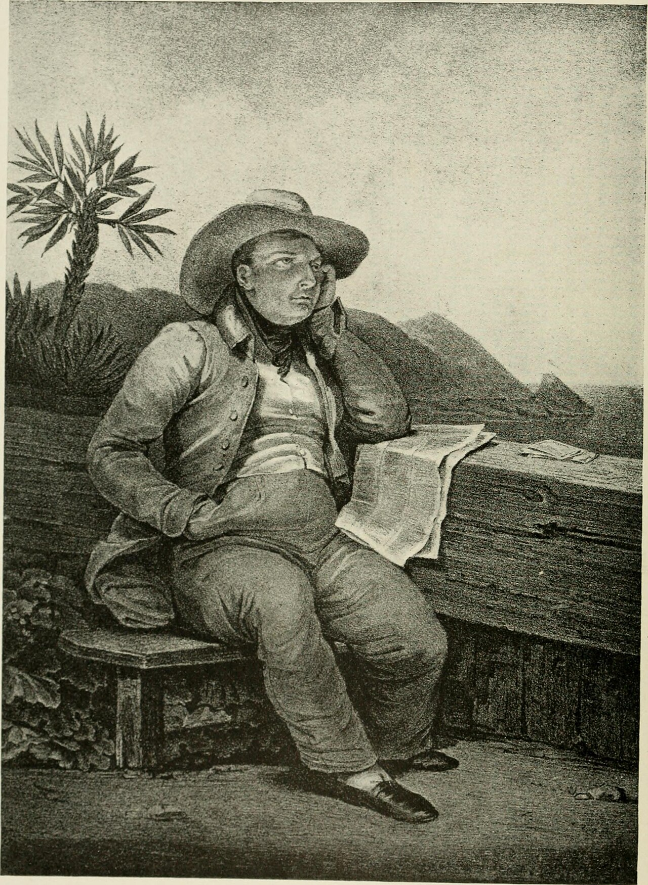
벤자민 로버트 헤이든, 「세인트헬레나의 나폴레옹」(1830, 사후 그림). 한 빈 들판 위에서 옛 군용 외투를 입고 두 손을 등 뒤로 모은 한 사내. 19세기 낭만주의가 한 황제의 마지막 자세를 한 시대의 상징으로 만들었다.
그가 함께 데려간 사람들 베르트랑 원수, 몽톨롱 백작, 구르고 장군, 라스 카세스(Las Cases) 백작 이 그의 마지막 부관이자 사관(史官)이었다. 라스 카세스는 매일 황제의 회상을 받아 적었다. 그것이 1823년 출간되어 19세기 가장 영향력 있는 책 중 하나 「세인트헬레나 회상록(Mémorial de Sainte-Hélène)」 이 된다. 그 책이 한 패배자를 한 신화로 만들었다.
회상록 안에서 보나파르트는 자기 인생을 다시 다듬었다. 자신이 자유와 평등의 챔피언이었다고, 모든 군주제에 맞선 인민의 대변자였다고 그렸다. 자신의 모든 야망과 모든 정복 자체가 자유와 진보의 한 필연이었다고. 그 자기 변호가 한 세대 뒤 자기 조카 나폴레옹 3세의 즉위(1852)의 이념적 토대가 된다. 한 사람이 자기 인생의 신화를 자기 손으로 자기 마지막 시간에 적는 일 — 그 글이 한 시대의 정치를 한 세대 뒤 다시 결정한다.
곁가지 서른하나 — 한 황제가 매일 영어 단어를 외운 시간
세인트헬레나에 도착한 첫 달 1815년 8월의 항해 도중부터 그는 라스 카세스에게 "영어를 배우고 싶소" 청했다. 평생 그가 가장 미워한 언어, 그러나 — 자기를 가둔 자들의 언어. 항해 중 마데이라 섬 앞에서 8월 23–25일 라스 카세스가 첫 두 강의를 했다. 1816년 1월 롱우드 하우스에 정착한 뒤로는 거의 매일 오전 10시부터 정오까지, 오후 한 시간 하루 평균 3–4시간의 영어 공부가 그의 일과의 핵심이었다. 라스 카세스가 적은 일지에 따르면, 그는 한 달에 영어 단어 약 1,000개를 외웠고, 8개월째에는 영국 신문을 사전 없이 읽고, 「로빈슨 크루소」와 「에든버러 리뷰」를 읽었다. 그가 영어로 직접 쓴 편지 한 통이 보존되어 있다 — 1816년 3월 9일, 라스 카세스에게 보낸 짧은 편지. 문법은 무너졌으나 — 다음 한 문장은 또렷하다: "Count Lascases. Since six week, j learn the english and j do not any progress. (라스 카세스 백작. 6주 전부터 영어를 배우는데, 도통 늘지 않소.)" 한 시대의 정복자가 한 시대의 자기 적의 말을 한 자도 잃지 않으려 매일 외운 그 모습이 가장 인간적인 한 장면으로 남는다. 동시에 그는 같은 5년 7개월 동안 약 12kg의 체중이 늘었다(독일 학자 류시(Lüsi)의 2006년 재구성). 매일 정원에서의 한 시간 산책을 영국 총독 허드슨 로의 감시 강화로 점점 거른 결과였다.
출전: Las Cases 『Mémorial de Sainte-Hélène』 · Napoleon.org "Napoleon's English Lessons" · ResearchGate "Weight Course of Napoleon" (2006)
곁가지 서른둘 — 톨스토이가 본 한 꼭두각시
한 황제가 세인트헬레나에서 자기 신화를 다듬던 그 시간으로부터 정확히 반세기 뒤 러시아의 한 백작이 펜을 들었다. 레프 톨스토이(Лев Толстой)의 「전쟁과 평화(Война и мир, 1869)」. 작품 안에서 그가 그린 나폴레옹은 라스 카세스의 회상록이 그린 자유의 챔피언이 아니다. 자기 머리카락을 매일 가꾸고, 자기 얼굴을 거울에서 한참 들여다보고, 자기 외투의 단추 한 개의 위치를 세 번 바꾸는 작고 자기 자신에게 빠진 한 사내. 톨스토이는 작품의 두 번째 에필로그에서 한 챕터 전체를 19세기 역사철학에 대한 자기 논쟁으로 채웠다. 그가 부인한 것은 정확히 — 위인사관(Great Man Theory)이었다: "한 황제가 한 전투를 결정한다는 것은 한 환상이다. 보로디노의 들판 위에서 그날의 결과를 결정한 것은 보나파르트가 아니라 그 들판에 있던 수만 명의 농부와 보병의 한 순간 한 순간의 셀 수 없이 많은 작은 결정들이었다." 톨스토이의 보나파르트는 자기가 역사를 움직인다고 끝까지 믿은 한 꼭두각시다. 한 시대 위에 한 손을 얹은 듯 보였으나, 그도 폭포에 떨어지는 한 방울의 물처럼 자기보다 큰 한 흐름에 흘려간 한 인간이었을 뿐. 보나파르트의 자기 변호와 톨스토이의 자기 부정 그 두 거울 사이에서 19세기가 한 황제의 자기 이해를 두 번 다시 만들었다.
출전: 톨스토이 『전쟁과 평화』 제2 에필로그 · CliffsNotes · Erraticus "Tolstoy and the Great Man Theory" · Napoleon.org "War, the Hero and the Will"
섬에서의 5년 7개월. 그는 매일 정원을 가꾸고 책을 읽고 자기 부관들에게 옛 전투를 다시 설명했다. 그가 점점 야위어갔다. 1817년부터 위장 통증을 호소했다. 1820년 자리에 누웠다. 1821년 봄, 그가 자기 마지막을 준비했다. 그는 유언을 받아 적게 했다: "나는 가톨릭 신자로 죽기를 원한다. 내 시신은 센 강 가에 묻히기를 원한다 — 내가 그토록 사랑한 프랑스 인민들 사이에."
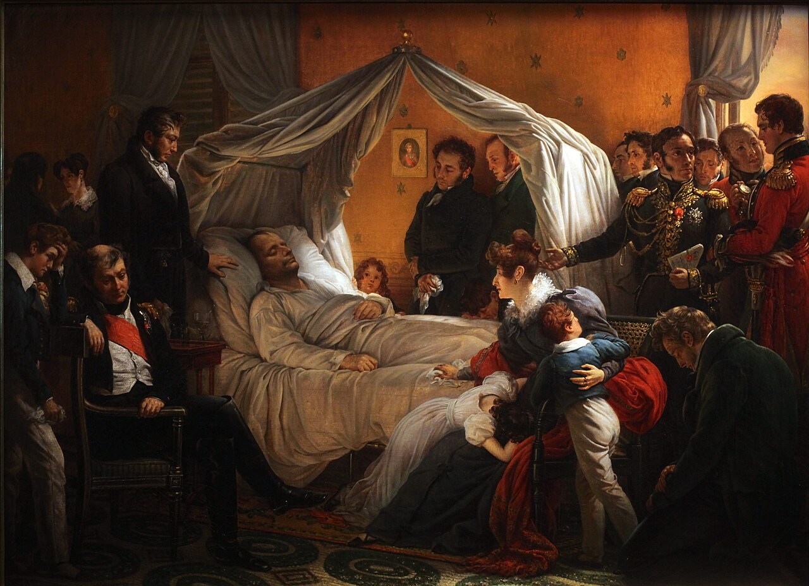
샤를 폰 스토이벤, 「나폴레옹의 죽음」(1828). 1821년 5월 5일 오후 5시 49분, 롱우드 하우스의 한 야전 침대에서. 부관 베르트랑·몽톨롱·마르샹이 마지막까지 함께 있었다.
1821년 5월 5일 오후 5시 49분, 51세 8개월의 나폴레옹 1세가 세인트헬레나의 한 야전 침대에서 죽었다. 사료가 전하는 그의 마지막 말은, 들리지 않는 중얼거림 사이에서 부관들이 가까스로 알아들은 세 단어였다: "프랑스 ... 군대 ... 조세핀 ..."(France ... armée ... Joséphine ...). 그가 평생 사랑한 세 가지가 한 호흡에 적혀 있었다. 한 황제의 마지막 어순(語順)이 평생의 진실을 한 줄에 정렬시켰다.
다음 날 부검이 시행되었다. 공식 사인은 위암(stomach cancer). 그의 아버지 카를로도 같은 병으로 죽었다. 그러나 한 세기 반 뒤 1960년대 그의 머리카락을 현대 화학적으로 분석한 결과, 정상치의 100배에 가까운 비소(arsenic) 농도가 검출되었다. 독살설이 다시 학계에 떠올랐다. 가능한 범인은 부관 몽톨롱 백작(영국 정보부의 정보원이었다는 의혹)이었다. 그러나 다른 한편, 19세기에 흔히 쓰이던 벽지 색소 "셸레스 그린(Scheele's green)"이 비소를 다량 함유한 안료였고, 롱우드 하우스의 곰팡이 슨 벽이 그 안료를 공기 중에 방출했다는 보다 평범한 설명도 있다. 진실은 그가 누운 그 화산섬 아래에 남아있다.
곁가지 서른셋 — 비소 중독설의 과학사, 또는 한 스웨덴 치과의사의 38가닥 머리카락
1955년, 스웨덴 예테보리(Göteborg)의 한 치과의사 스텐 포셔푸드(Sten Forshufvud, 1903–1985) 가 라스 카세스와 마르샹의 회상록에서 황제의 임종 직전 증상 22가지를 한 의학적 목록으로 정리해보았다. 두통, 다리 부종, 피부 황색증, 잇몸 출혈, 가벼운 발작, 머리카락 손실, 그리고 결정적으로 "손톱과 발톱 위의 흰 가로띠(Mees' lines, 미스 선)". 그 목록이 의학교과서의 한 항목과 정확히 일치했다 만성 비소 중독. 1961년 그는 책을 출간했다 — 「Napoléon a-t-il été empoisonné?(나폴레옹은 독살되었는가?)」. 같은 해 그는 황제의 시종이 평생 한 봉투에 보관해온 임종 다음 날 잘라낸 머리카락 38가닥을 글래스고 대학의 법의학 교수 해밀턴 스미스(Hamilton Smith)에게 보내, 영국 원자력연구소의 당시로서는 가장 최신 기술인 중성자 활성화 분석(neutron activation analysis)으로 검사를 의뢰했다. 결과: 정상치의 약 13배, 최고 38배의 비소 농도. 1961년 10월 「Nature」지가 그 결과를 게재했다. 한 황제가 1년 6개월에 걸쳐 조금씩 독살되었다는 가설이 그날 과학계로 들어왔다.
포셔푸드의 의심은 부관 샤를-트리스탕 드 몽톨롱(Charles-Tristan de Montholon) 백작에게로 향했다. 황제의 비싼 셰리주 캐스크를 자기만이 접근할 수 있었던 자. 부르봉 왕가에 끈이 있었던 자. 황제의 유언으로 가장 큰 유산(200만 프랑)을 받기로 되어 있었던 자. 그 자가 4년에 걸쳐 조금씩 비소를 셰리주에 탔다는 가설이었다.
그러나 2008년 옥스퍼드 대학과 이탈리아 파비아 대학의 공동 연구가 다른 결론을 내렸다. 황제 본인의 머리카락만이 아니라 아들 로마 왕의 머리카락, 황후 조세핀의 머리카락, 같은 시기 살아 있던 다른 유럽인 10명의 머리카락을 함께 분석하니 그들 모두에게서 비슷한 수준의 정상치보다 100배 높은 비소 농도가 검출되었다. 즉 그것은 19세기 초의 환경적 정상치였다. 머리 약품, 의약품, 식수, 그리고 무엇보다 셸레스 그린(Scheele's Green)이라 불린 비소-구리 화합물 안료 1775년 발명되어 19세기 초까지 유럽 벽지의 가장 인기있는 녹색이었던. 롱우드 하우스의 응접실 벽지가 정확히 그 녹색이었다. 습한 대서양의 곰팡이가 그 안료를 아르신(arsine) 가스로 변환시켰다. 황제는 누구의 손에 의해서가 아니라 자기 응접실의 벽으로부터 매일 조금씩 그 가스를 마셨다.
최종 2007년 시카고의 텍사스대 휴스턴 메디컬센터 연구팀이 그의 부검 보고서와 가족 병력을 다시 분석해 가장 가능성 높은 사인은 위암(아버지 카를로의 직계 유전)이라 결론 지었다. 비소는 그를 천천히 약하게 만들었을 뿐 결정적으로 죽이지는 않았다. 한 황제를 죽인 것은 어쩌면 한 사내의 음모도 한 제국의 보복도 아니라 한 시대의 한 평범한 벽지 색이었다.
출전: Sten Forshufvud 『Who Killed Napoleon?』(1961) · Smith, H. "Nature" 192권(1961) · Lugli et al. "Il Veleno di Napoleone" 파비아대(2008) · Mari, F. et al. "Science of the Total Environment"(2008) · napoleon.org "The Poisoning of Napoleon: an update"
곁가지 서른넷 — 부검의가 잘라낸 한 조각, 또는 박물관의 한 기괴한 항목
1821년 5월 6일, 부검. 황제의 시신은 코르시카의 사제 앙주-폴 비냘리(Abbé Ange Paul Vignali)가 마지막 종부성사를 집전했던 그 사제의 입회 아래 코르시카 출신 의사 프란체스코 안톰마르치(Francesco Antommarchi)의 손에 갈렸다. 위장의 종양과 간의 비대가 확인되었다. 그러나 부검에서 누가 누구의 어떤 손짓으로 한 작은 신체 조각을 잘라내 비냘리 사제에게 넘겼다는 사실이 한 세기 반 뒤에야 사료에 나타난다. 황제의 음경(陰莖)이었다. 사제는 그것을 코르시카로 가져갔다. 사제가 1828년 한 핏빛 가문 분쟁에서 살해된 뒤, 그의 가족이 그 유물을 평생 잘 보관했다. 1916년 영국의 유물상에게 팔렸고, 1924년 미국으로 건너갔다. 1927년 뉴욕 메트로폴리탄 미술관에서 "황제의 사적인 한 조각"이라는 제목으로 며칠간 전시되어 사람들의 무례한 야유를 받았다. 한 신문 기자가 "마치 한 마른 가죽끈 같다" 적었다. 1969년 파리 드루오 경매장에서 팔리지 못한 뒤 1977년 미국 비뇨기과 학회의 회장이자 컬럼비아 대학 비뇨기과 교수 존 K. 라티머(John K. Lattimer) 박사가 3,000 달러(오늘날 약 16,000 달러)에 그것을 사들였다. 그가 그것을 산 이유 자기 자녀에게 한 짧은 말로 적혀 있다: "한 황제의 사후의 그 모욕적인 떠돌이 신세에 마침표를 찍기 위해서다." 그가 2007년 죽은 뒤로 그 유물은 그의 딸 에반의 뉴저지 자택의 한 침대 아래 가죽 케이스 안에 보관되어 있다 한다. 길이 약 3.8cm의 가죽처럼 마른 한 조각. 한 시대의 정복자가 자기 신체의 가장 사적인 한 조각을 박물관도 아닌 한 미국 가정집 침대 아래에 영원히 두고 떠났다. 19세기와 21세기 사이의 가장 기이한 한 우화다.
출전: Wikipedia "Napoleon's penis" · The Straight Dope · Ancient Origins · Lattimer 가문 인터뷰(2007) · Antommarchi 부검 보고서
섬에 매장된 그의 시신은 1840년 프랑스의 시민왕 루이-필리프가 영국 정부에 반환을 요청해 본국으로 돌아왔다. 12월 15일, 거대한 시민 행렬이 파리의 거리를 가득 채운 채, 그가 마지막으로 묻힌 자리는 센 강 가의 앵발리드(Les Invalides) — 옛 군인 병원의 황금 돔 아래였다. 19년 후의, 그의 유언이 정확한 형태로 이루어진 일이었다.
곁가지 서른다섯 — 영국은 어떻게 베수비오 화산처럼 한 사람을 가두었는가
세인트헬레나는 영국이 그를 가두기 위해 일부러 골랐다. 그 5년 7개월 동안 영국은 그 작은 섬에 평균 약 2,300명의 수비대(일시적으로 3,000까지 증원), HMS 노섬벌랜드와 콘퀘스트라블 두 척의 군함, 그리고 섬을 24시간 감시하는 경비초소 125개소를 항상 배치했다. 단 한 사람을 가두기 위해. 그 한 사람이 한 시대 동안 무엇이었는지를, 그 비대칭이 가장 잘 말해준다. 영국 의회 회계자료에 따르면 그 6년의 수비 비용이 약 40만 파운드(현재가치 약 5천만 파운드, 6,500만 달러 이상)였다 한 해 수비 예산이 영국 식민지 한 곳의 1년치 운영비를 넘었다. 영국이 평생 죽은 뒤까지도 그를 두려워했다. 그러나 그가 거기서 정말 한 일은 정원을 가꾸고 자기 회상록을 부관에게 읊는 일이었다. 가장 위협적인 죄수가 가장 평범한 죄수가 되었다. 그러나 그가 거기서 적은 그 회상록이 그가 갇혀 있던 자체보다 더 큰 자유를 다음 세대에 가져왔다.
출전: napoleon.org "Napoleon and Saint Helena, 1815-1816" · 영국 의회 회계자료(1821) · Wikipedia "Napoleon's exile to St. Helena" · History Hit
XX
사후 1821년 이후
유산 — 살아남은 법전, 부활하는 유럽
강의 듣기
한 사람의 군사적 정복은 그의 죽음과 함께 끝났다. 그가 그린 유럽 지도는 1815년 빈 회의가 그가 들어가기 전의 옛 지도로 거의 되돌렸다. 부르봉이 다시 파리에. 합스부르크가 다시 빈에. 호엔촐레른이 다시 베를린에. 한 옛 군주제의 회복기였다.
그러나 정복으로 끝나지 않은 무엇이 그가 남겼다.
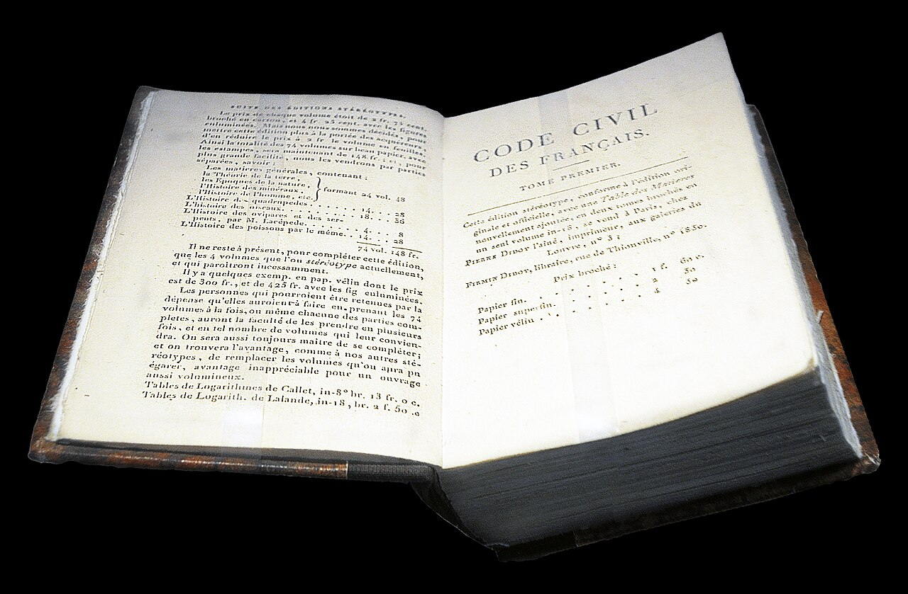
나폴레옹 법전(Code Civil des Français) · 1804년 초판. 102차 회의 중 57차를 황제 자신이 사회했다. 한 황제가 자기 시간을 가장 많이 들인 입법.
첫째 — 나폴레옹 법전(Code Civil). 1804년 공포된 이 입법이 그가 평생 가장 자랑스러워한 업적이다. 세인트헬레나에서 그가 적었다: "나의 진정한 영광은 마흔 번의 전투에서 이긴 것이 아니다. 워털루가 그 모든 승리의 기억을 지웠다. 그러나 무엇도 지울 수 없는 한 가지가 있다 — 그것은 영원히 살아갈 나의 「민법전」이다." 그 예언은 정확했다. 21세기 오늘날까지 프랑스·벨기에·룩셈부르크·네덜란드·이탈리아·스페인·포르투갈·루마니아·라틴아메리카 대부분, 그리고 미국 루이지애나 주와 캐나다 퀘벡 주의 민법은 모두 나폴레옹 법전의 직계 후예다. 전 세계 인구 약 6억 명이 오늘날 그가 직접 사회한 회의의 결과 아래 살고 있다.
다비드, 「튀일리 궁 서재의 나폴레옹」 · 1812년, 워싱턴 내셔널 갤러리. 새벽 4시 13분, 「민법전」을 쓰던 입법자의 자세. [Wikimedia · PD]
곁가지 서른여섯 — 70개국의 법전, 또는 한 황제의 펜이 닿은 가장 먼 그늘
현대 비교법학자들의 합의에 따르면 오늘날 약 70개국의 민법체계가 나폴레옹 법전을 직접적 또는 간접적 모범으로 삼고 있다(Britannica, 비교법연구 2023). 그 지도가 그린 한 황제의 펜의 그늘 은 그가 자기 칼로 다스린 어떤 영역보다도 훨씬 멀다.
유럽 프랑스·벨기에·룩셈부르크·네덜란드·이탈리아·스페인·포르투갈·그리스·루마니아·폴란드
라틴아메리카 멕시코·브라질(1916년 민법)·아르헨티나·칠레(안드레스 베요 1855년 민법)·콜롬비아·페루·우루과이 등 거의 모든 나라
북미 미국 루이지애나주(1825년 민법, 1870년 개정 — 현재도 시행) · 캐나다 퀘벡주(1866년, 1994년 신민법)
아프리카 옛 프랑스 식민지였던 모로코·튀니지·알제리·세네갈·코트디부아르·마다가스카르 등 — 옛 벨기에령 콩고 등
아시아 메이지 일본 그리고 일본 식민지였던 한반도와 대만 베트남(프랑스령 인도차이나 시대 도입)
출전: Britannica "Napoleonic Code" · UNESCO World Heritage 자료 · Wikipedia "Napoleonic Code" · "The Global Reach of the Napoleonic Code"(Gerti Tashkomd, 2022)
곁가지 서른일곱 — 메이지 일본의 나폴레옹 열풍, 또는 한 코르시카 청년이 동방의 청년들에게 한 약속
한 세대가 지난 뒤 그를 가장 깊게 받아들인 곳은 의외로 그가 한 번도 본 적 없는 동방의 한 군도였다. 메이지 유신(明治維新, 1868)의 청년들이 자기 시대를 자기 손으로 한 봉건 막부에서 한 근대국가로 옮겨 가는 길 위에서 가장 자주 자기 거울 옆에 둔 한 그림이 한 코르시카 청년의 한 초상이었다.
1857년 일본에 표류한 미국 책 한 권으로부터 『나포레온전(那破崙傳)』이라는 한문 번역 한 권이 1860년대 후반에 사쓰마와 조슈의 청년들 사이에서 손에서 손으로 옮겨다녔다. 사이고 다카모리(西郷隆盛)가 평생 자기 침상 머리맡에 두었다는 그 책. 오쿠보 도시미치(大久保利通)가 자기 일기에 "한 나라가 한 사람을 따라가 어디까지 갈 수 있는지를 그 한 권이 보여주었다" 적은 책. 1885년 사이고가 세이난 전쟁(西南戦争)의 시로야마 산정에서 자결한 뒤로는 일본 청년 사이에 "제2의 나포레온은 누구인가"가 한 시대의 한 질문이 되었다.
후쿠자와 유키치(福澤諭吉)가 1869년 출간한 「세계국진(世界国尽)」 의 한 챕터를 보나파르트에게 헌정했다. 그가 적은 한 마디 "코르시카의 한 시골 청년이 자기 칼 하나로 한 세대 동안 유럽 전체를 흔들었다. 우리도 그렇게 못 할 이유가 없다." 메이지 일본이 한 세대 자기 나라의 군대를 다시 만들고 자기 헌법을 다시 짜고 자기 민법을 다시 쓰는 그 시간 동안 그들의 가장 자주 인용된 외국 인물이 정확히 그 사내였다. 1898년 일본 민법(明治民法)이 프랑스 법학자 구스타브 부아소나드(Gustave Boissonade)의 손에 처음 초안되고 그 다음 독일 모범으로 다시 다듬어지는 그 과정의 첫 발걸음은 정확히 나폴레옹 법전이었다. 한 세대 뒤 그 일본 민법이 식민지 조선에 강제 이식되어 1945년 해방 뒤로도 오랫동안 한국 민법의 한 기초 골격을 이루었다.
일본 육군대학교의 메이지 후반부터 다이쇼 초기에 걸친 전술 교육에서는 가장 자주 분석된 한 전투가 워털루였다. 한 정보 전달의 실패가 어떻게 한 군의 한 운명을 결정짓는가에 대한 그루시 원수의 부재 라는 그 한 사례가 일본 군부의 한 평생 교훈이 되었다. 한 코르시카 청년이 자기가 한 번도 만난 적 없는 한 군도의 한 세대의 청년들의 머리 위에 한 그늘을 드리웠다.
출전: 후쿠자와 유키치 『세계국진』(1869) · Keio University 메이지 자료 · Britannica "Saigo Takamori" · "The Influence of the Napoleonic Code on the Japanese Civil Code"(Comparative Legilinguistics) · 일본 메이지문헌DB
둘째 — 행정 체계와 시민의 평등. 그가 도입한 도청(préfecture)·중앙은행·미터법(인류 최초의 통일 단위계, 그가 1799년 의무화)·국민교육 리세(lycée)·국가시험을 통한 관직 채용·종교 자유. 한 시민이 어디서 태어났든 어떤 신분이든, 자기 능력으로 한 사다리를 오를 수 있다는 원칙. 한 황제가 자기 군대를 그 사다리 위에서 운영한 그 원칙이, 한 시민사회의 새 기본 약속이 되었다. 19세기 유럽 자유주의, 나아가 19세기 후반 한국·일본의 근대화까지, 그 약속의 후예다.
셋째 — 가장 역설적인 유산, 민족주의. 그가 유럽을 자기 깃발 아래 정복하는 동안, 그가 정복한 각 민족들이 자신들이 "한 민족"이라는 새 자기인식을 처음 얻었다. 독일에서 청년 피히테가 「독일 국민에게 고함(Reden an die deutsche Nation)」을 베를린에서 황제의 점령 아래 강연했다(1807–1808). 같은 자극이 스페인의 게릴라를 만들었고, 러시아의 "조국 전쟁(Отечественная война)"이라는 새 단어를 만들었고, 폴란드의 절망적인 봉기들에 첫 자극을 주었다. 한 황제가 자기가 무너뜨린 옛 군주들 자리에 더 큰 한 황제가 들어가는 꿈을 가졌으나, 그가 흩어놓은 씨앗은 다음 세대에 다른 열매 민족 국가들 을 만들었다. 19세기의 이탈리아 통일(1861)과 독일 통일(1871)까지, 그가 일으킨 첫 자극의 후예다.
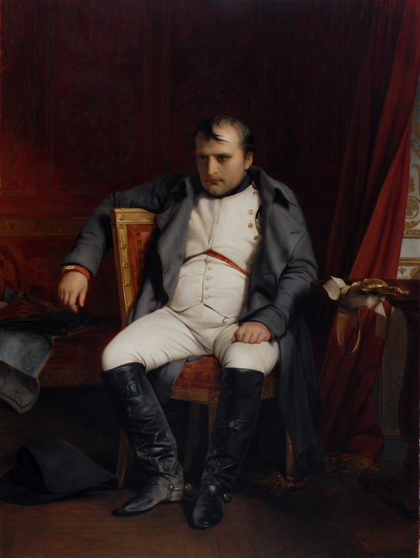
폴 들라로슈, 「퐁텐블로의 나폴레옹, 1814」(1845). 19세기 후기 낭만주의가 한 패배한 황제의 자세를 한 시대의 상징으로 다시 그렸다.
내가 만든 모든 영광은 워털루의 안개에 흩어졌다. 그러나 무엇도 지울 수 없는 한 가지가 있다 — 그것은 영원히 살아갈 나의 「민법전」이다.
나폴레옹 1세, 세인트헬레나 회상록(1820년경)
한 사내의 평생 — 숫자들
치른 전투약 60회 — 그 중 패배는 7회. 결정적 패배는 라이프치히·워털루.
1812년 정점기 통치 면적약 2백만 km², 유럽 인구의 약 절반(7천만 명)이 그의 직간접 통치 아래.
나폴레옹 전쟁 사망자약 3백만 명 — 1차 대전 이전 단일 사건 최대.
「세인트헬레나 회상록」 판매량19세기에 성경 다음으로 많이 팔린 책.
그가 직접 사회한 「민법전」 회의총 102회 중 57회.
오늘날 그의 법전 영향 아래 사는 인구약 6억 명.
곁가지 마지막 — 그가 영원히 다시 보지 못한 사람들
그가 세인트헬레나에서 평생 다시 보지 못한 사람들이 있다. 어머니 레티치아는 그의 사후 15년을 더 살다가 1836년 로마에서 86세에 죽었다. 그녀가 평생 모은 비상금이 자식들의 망명 생활을 마지막까지 지탱했다. 그의 첫 사랑 조세핀은 그가 엘바에 있는 동안 1814년 5월 폐렴으로 죽었다. 51세였다. 그가 그 소식을 받자 이틀을 자기 방에서 나오지 않았다. 외아들 로마 왕(나폴레옹 2세)은 두 살 때 마지막으로 보았다. 그 아이는 빈에서 결핵으로 21세에 1832년 죽었다 — 자식을 남기지 않은 채. 두 번째 황후 마리 루이즈는 그가 세인트헬레나에 있는 동안 새 남편 나이페르크 백작과 살았다. 그에게 다시 가지 않았다. 한 황제가 평생 자기가 가장 가까이 사랑한 모든 사람들과 작별한 채 죽었다. 그것이 한 황제의 가장 큰 형벌이었다. 한 시대를 가진 사람이, 그 시간 안에서, 가장 작은 자기 가족의 시간을 잃었다.
✦
한 사내, 여러 거울
다른 시선 — 같은 한 사람을 바라본 일곱 가지 눈
강의 듣기
한 사람의 일대기는 그 사람이 죽은 뒤로부터 다시 한 번 더 살아진다. 그를 본 사람들의 시선의 수만큼 그가 다시 살았다. 같은 한 코르시카 청년을 두 세기 일곱 다른 눈이 바라본 그 일곱 다른 얼굴.
I — 라스 카세스의 눈 · 자기 변호자의 황제
세인트헬레나의 한 받아 적는 부관이 한 황제의 자기 마지막 변론을 매일 듣고 적었다. 그가 그린 보나파르트는 자유와 평등의 화신 옛 군주제의 적 인민의 대변자 진보의 사도다. 「세인트헬레나 회상록」(1823)이 19세기 가장 영향력 있는 정치 텍스트 중 한 권이 되어, 그의 조카 나폴레옹 3세의 제2제정(1852)의 이념적 토대가 된다.
II — 베토벤의 귀 · 배신당한 영웅의 발자국
1804년 5월의 빈, 페르디난트 리스가 가져온 황제 즉위 소식. "그러면 그도 한낱 사람일 뿐이로구나(So ist der auch nichts anders, wie ein gewöhnlicher Mensch)!" — 한 작곡가의 입에서 흘러나온 그 한 마디. 「3번 교향곡」의 표지가 그날 손가락에 종이를 뚫을 정도로 가로질러졌다. 그가 그린 보나파르트는 한때는 모든 군주의 적이었으나, 결국 자기 자신이 가장 큰 군주가 된 배신당한 영웅이다.
III — 헤겔의 시선 · 백마 위의 세계정신
1806년 10월 13일의 예나. 「정신현상학」의 마지막 페이지를 쓰던 한 무명 강사가 자기 창문에서 정찰을 나가는 한 황제를 보았다. 그가 친구 니트하머에게 적은 한 통의 편지가 19세기 독일 철학의 한 출발점이 된다. 그가 그린 보나파르트는 한 시대의 모든 모순이 응축된, 자기도 모른 채 그 모순을 실현하는, 백마 위의 세계정신(Weltseele zu Pferde)이다.
IV — 톨스토이의 펜 · 자기 환상의 꼭두각시
한 세기 반 뒤 러시아의 한 백작이 「전쟁과 평화」(1869)의 두 번째 에필로그를 한 챕터를 통째로 보나파르트의 위인사관을 반박하는 데 썼다. 그가 그린 보나파르트는 자기가 역사를 움직인다고 끝까지 믿은 한 꼭두각시다. 보로디노의 결과는 한 황제가 결정한 것이 아니라 그날 그 들판의 수만 농부와 보병의 셀 수 없는 한 한 결정들 의 총합이 결정한 것이라는 한 19세기 러시아의 한 거꾸로 본 진실.
V — 영국 풍자화가의 펜 · 키 작은 폭군
같은 시기 영국의 풍자화가 제임스 길레이와 조지 크룩섕크가 동시대의 다른 어떤 그림보다 더 한 세기의 한 통념을 만들었다. 그들이 그린 보나파르트는 키가 영국 보병의 어깨에 닿지 않는 한 작은 광기 어린 폭군. 길레이의 1803년의 한 그림(『The King of Brobdingnag and Gulliver』)에서 조지 3세가 손바닥 위에 보나파르트를 놓고 들여다보고 있다. 한 풍자만화가 한 세기 반의 한 키의 신화를 만들었다.
VI — 메이지 청년의 눈 · 동방의 모범
한 세대 뒤 그가 본 적 없는 동방의 한 군도에서 한 봉건 막부를 한 근대국가로 옮겨가던 청년들이 자기 침상 머리맡에 한 권의 책을 두었다. 사쓰마의 사이고 다카모리가, 조슈의 이토 히로부미가, 후쿠자와 유키치가 그를 한 시골 청년이 한 칼 하나로 한 세대 동안 한 대륙을 흔든 모범으로 보았다. 그가 그린 보나파르트는 비유럽의 한 근대화 청년이 자기 자신을 거울에 비춰 보는 한 거울이다.
VII — 오늘 한 시민의 눈 · 펜이 칼보다 오래 산다
21세기의 한 평범한 시민이 한 슈퍼마켓에서 자기 지갑 안의 신분증을 꺼낸다. 그 신분증에 자기 이름 자기 생일 자기 주소가 한 일정한 형식으로 적혀 있는 한 그 형식의 첫 원본은 1804년 3월 21일 한 황제가 사회한 한 회의의 결과다. 한 시민이 자기 집을 자기 자녀에게 상속하는 한 순간, 그가 자기 회사를 한 등기소에 등록하는 한 순간, 그가 자기 결혼을 한 시청에 신고하는 한 순간에 그는 한 코르시카 청년의 한 펜의 그늘을 모르고 지나간다. 그가 그린 보나파르트는 한 잊혀진 그러나 매일 살아 있는 펜이다.